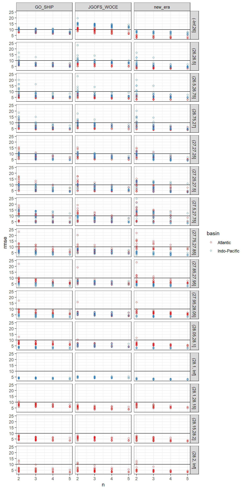
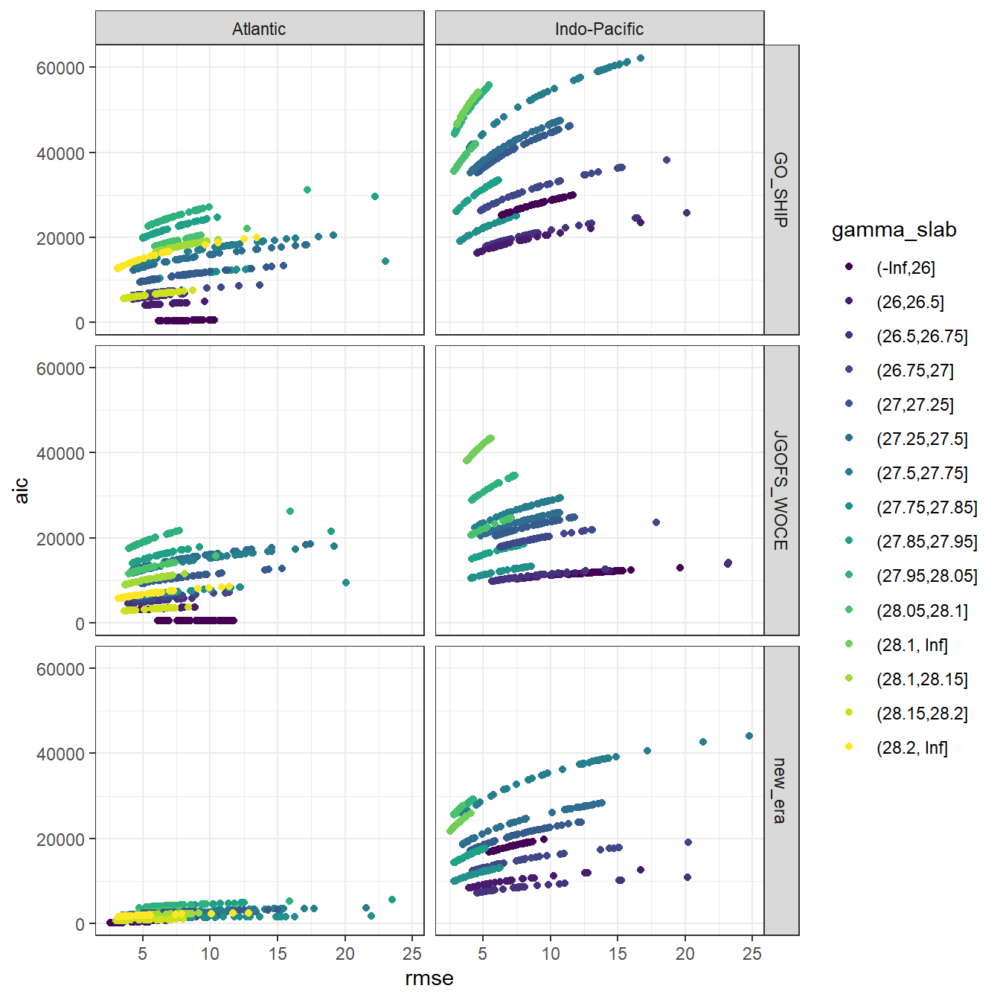
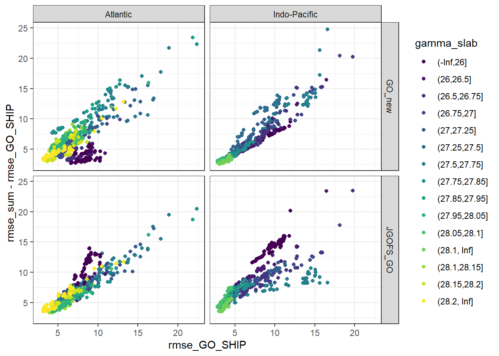
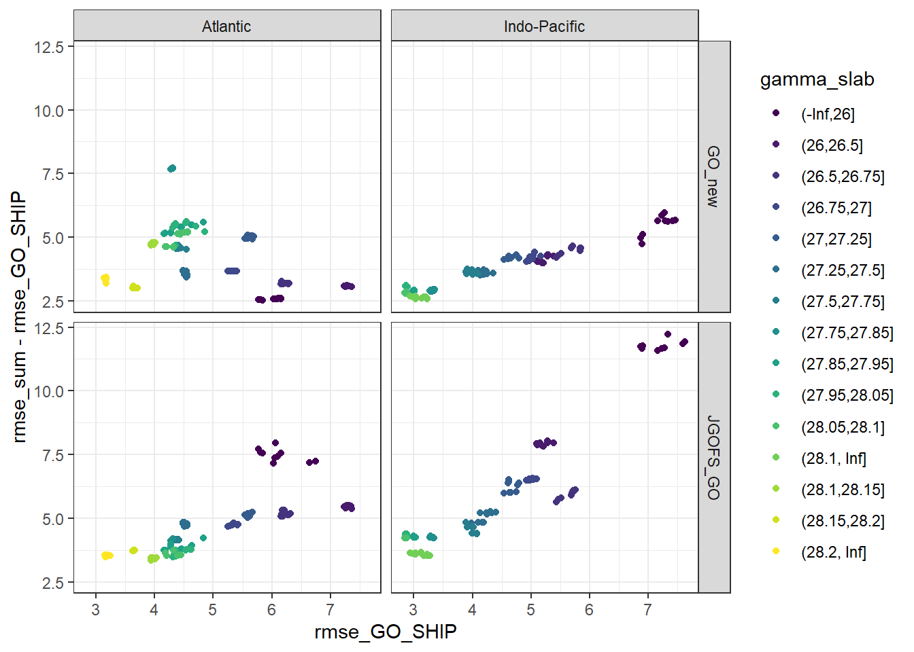

Last updated: 2020-11-20
Checks: 7 0
Knit directory: Cant_eMLR/
This reproducible R Markdown analysis was created with workflowr (version 1.6.2). The Checks tab describes the reproducibility checks that were applied when the results were created. The Past versions tab lists the development history.
Great! Since the R Markdown file has been committed to the Git repository, you know the exact version of the code that produced these results.
Great job! The global environment was empty. Objects defined in the global environment can affect the analysis in your R Markdown file in unknown ways. For reproduciblity it’s best to always run the code in an empty environment.
The command set.seed(20200707) was run prior to running the code in the R Markdown file. Setting a seed ensures that any results that rely on randomness, e.g. subsampling or permutations, are reproducible.
Great job! Recording the operating system, R version, and package versions is critical for reproducibility.
Nice! There were no cached chunks for this analysis, so you can be confident that you successfully produced the results during this run.
Great job! Using relative paths to the files within your workflowr project makes it easier to run your code on other machines.
Great! You are using Git for version control. Tracking code development and connecting the code version to the results is critical for reproducibility.
The results in this page were generated with repository version 21f6e29. See the Past versions tab to see a history of the changes made to the R Markdown and HTML files.
Note that you need to be careful to ensure that all relevant files for the analysis have been committed to Git prior to generating the results (you can use wflow_publish or wflow_git_commit). workflowr only checks the R Markdown file, but you know if there are other scripts or data files that it depends on. Below is the status of the Git repository when the results were generated:
Ignored files:
Ignored: .Rproj.user/
Ignored: data/
Ignored: dump/
Note that any generated files, e.g. HTML, png, CSS, etc., are not included in this status report because it is ok for generated content to have uncommitted changes.
These are the previous versions of the repository in which changes were made to the R Markdown (analysis/eMLR_model_fitting.Rmd) and HTML (docs/eMLR_model_fitting.html) files. If you’ve configured a remote Git repository (see ?wflow_git_remote), click on the hyperlinks in the table below to view the files as they were in that past version.
| File | Version | Author | Date | Message |
|---|---|---|---|---|
| html | e563eef | jens-daniel-mueller | 2020-11-20 | Build site. |
| html | 064d52f | jens-daniel-mueller | 2020-11-20 | Build site. |
| Rmd | 7ffabe6 | jens-daniel-mueller | 2020-11-20 | use setup child Rmd file |
| html | eb5dc10 | jens-daniel-mueller | 2020-11-18 | Build site. |
| Rmd | d6968a0 | jens-daniel-mueller | 2020-11-18 | rebuild model runs |
| html | fc70a34 | jens-daniel-mueller | 2020-11-10 | Build site. |
| html | b170b79 | jens-daniel-mueller | 2020-11-03 | Build site. |
| html | 411a35b | jens-daniel-mueller | 2020-10-02 | Build site. |
| html | 0d38979 | jens-daniel-mueller | 2020-10-01 | Build site. |
| html | 4578cfa | jens-daniel-mueller | 2020-09-19 | Build site. |
| html | d59f716 | jens-daniel-mueller | 2020-09-18 | Build site. |
| html | f5a20ac | jens-daniel-mueller | 2020-09-17 | Build site. |
| html | cf64460 | jens-daniel-mueller | 2020-09-17 | Build site. |
| html | d43d9e2 | jens-daniel-mueller | 2020-09-16 | Build site. |
| html | 1f3319a | jens-daniel-mueller | 2020-09-16 | Build site. |
| html | 0aa596d | jens-daniel-mueller | 2020-09-16 | Build site. |
| Rmd | fb6a3c3 | jens-daniel-mueller | 2020-09-16 | created surface water climatology |
| html | da91d98 | jens-daniel-mueller | 2020-09-10 | Build site. |
| html | a34a239 | jens-daniel-mueller | 2020-09-10 | Build site. |
| html | c3ffdfd | jens-daniel-mueller | 2020-09-08 | Build site. |
| Rmd | 04ee730 | jens-daniel-mueller | 2020-09-08 | rebuild after revision |
| html | a50f053 | jens-daniel-mueller | 2020-09-07 | Build site. |
| Rmd | fe673db | jens-daniel-mueller | 2020-09-07 | fitted model by era and saved era coeffcients |
| html | da445a6 | jens-daniel-mueller | 2020-09-04 | Build site. |
| html | 84dec46 | jens-daniel-mueller | 2020-09-02 | Build site. |
| Rmd | 7f54d38 | jens-daniel-mueller | 2020-09-02 | hide model runs in html output |
| html | fa11a74 | jens-daniel-mueller | 2020-09-02 | Build site. |
| Rmd | da4907d | jens-daniel-mueller | 2020-09-02 | all flagged variables |
| html | 429aab3 | jens-daniel-mueller | 2020-09-01 | Build site. |
| Rmd | b7a8f92 | jens-daniel-mueller | 2020-09-01 | fitted MLR models with oxygen based PO4* |
| html | f4216dd | jens-daniel-mueller | 2020-09-01 | Build site. |
| Rmd | 8f3ce45 | jens-daniel-mueller | 2020-09-01 | rebuild without PO4 star selection, oxygen only |
| html | 13a76d5 | jens-daniel-mueller | 2020-08-28 | Build site. |
| Rmd | 2e6a4ca | jens-daniel-mueller | 2020-08-28 | XXX |
| html | 27404de | jens-daniel-mueller | 2020-08-27 | Build site. |
| html | b610bf7 | jens-daniel-mueller | 2020-08-27 | Build site. |
| Rmd | 96ab537 | jens-daniel-mueller | 2020-08-27 | revised |
| html | b6d0e6a | jens-daniel-mueller | 2020-08-27 | Build site. |
| html | f40e48b | jens-daniel-mueller | 2020-08-26 | Build site. |
| html | ec20f40 | jens-daniel-mueller | 2020-08-24 | Build site. |
| Rmd | a804955 | jens-daniel-mueller | 2020-08-24 | split mapping into 2 rmds, po4star selection in parameters, use po4star nitrate |
| html | 5ffe187 | jens-daniel-mueller | 2020-08-20 | Build site. |
| html | 1064ef8 | jens-daniel-mueller | 2020-08-19 | Build site. |
| Rmd | 94f9375 | jens-daniel-mueller | 2020-08-19 | split emlr into data preparation, assumption testing, and model fitting |
| html | 8484d53 | jens-daniel-mueller | 2020-08-19 | Build site. |
| Rmd | eec0022 | jens-daniel-mueller | 2020-08-19 | split emlr into data preparation, assumption testing, and model fitting |
Loading libraries specific to the the analysis performed in this section.
library(lubridate)
library(GGally)
library(olsrr)
library(knitr)
library(kableExtra)
library(broom)
library(corrr)
library(GGally)Required are:
GLODAP <-
read_csv(
here::here(
"data/interim",
"GLODAPv2.2020_MLR_fitting_ready.csv"
)
)Individual linear regression models were fitted for C* as a function of each predictor combination. Fitting was performed separately within each basin, era, and slab. The root mean squared error (RMSE) was calculated for each fitted model.
for (i_basin in unique(GLODAP$basin)) {
for (i_era in unique(GLODAP$era)) {
# i_basin <- unique(GLODAP$basin)[1]
# i_era <- unique(GLODAP$era)[1]
print(i_basin)
print(i_era )
GLODAP_basin_era <- GLODAP %>%
filter(basin == i_basin, era == i_era)
for (i_gamma_slab in unique(GLODAP_basin_era$gamma_slab)) {
# i_gamma_slab <- unique(GLODAP_basin_era$gamma_slab)[1]
print(i_gamma_slab)
GLODAP_basin_era_slab <- GLODAP_basin_era %>%
filter(gamma_slab == i_gamma_slab)
lm_full <- lm(Cstar ~
sal +
tem +
aou +
oxygen +
silicate +
phosphate +
phosphate_star,
data = GLODAP_basin_era_slab)
lm_all <- ols_step_all_possible(lm_full)
lm_all <- as_tibble(lm_all$result)
lm_all <- lm_all %>%
mutate(basin = i_basin,
era = i_era,
gamma_slab = i_gamma_slab)
if (exists("lm_all_stats")) {
lm_all_stats <- bind_rows(lm_all_stats, lm_all)
}
if (!exists("lm_all_stats")) {
lm_all_stats <- lm_all
}
rm(lm_full, lm_all)
}
}
}
lm_all_stats %>%
write_csv(here::here("data/eMLR",
"lm_all_stats.csv"))
rm(i_gamma_slab, i_era, i_basin,
GLODAP_basin_era, GLODAP_basin_era_slab,
lm_all_stats)RMSE was plotted against the number of predictors (limited to 2 - 5).
lm_all_stats <- read_csv(here::here("data/eMLR",
"lm_all_stats.csv"))
lm_all_stats <- lm_all_stats %>%
filter(n >= parameters$predictors_min,
n <= parameters$predictors_max)
lm_all_stats %>%
ggplot(aes(n, rmse, col = basin)) +
geom_hline(yintercept = 10) +
geom_point(shape = 21) +
facet_grid(gamma_slab~era) +
scale_color_brewer(palette = "Set1")
AIC is an alternative criterion to RMSE to judge model quality, but not (yet) taken into account.
lm_all_stats %>%
ggplot(aes(rmse, aic, col = gamma_slab)) +
geom_point() +
scale_color_viridis_d() +
facet_grid(era~basin)
Within each basin and slab, the 10 linear regression models with lowest summed RMSE across all eras were selected.
lm_all_stats <- lm_all_stats %>%
select(basin, era, gamma_slab, predictors, rmse)
lm_all_stats_wide <- lm_all_stats %>%
pivot_wider(names_from = era,
values_from = rmse,
names_prefix = "rmse_")
lm_all_stats_wide <- lm_all_stats_wide %>%
mutate(
rmse_sum_JGOFS_GO = rmse_JGOFS_WOCE + rmse_GO_SHIP,
rmse_sum_GO_new = rmse_GO_SHIP + rmse_new_era
)
lm_all_stats <- lm_all_stats_wide %>%
pivot_longer(
c(rmse_sum_JGOFS_GO, rmse_sum_GO_new),
names_to = "eras",
values_to = "rmse_sum",
names_prefix = "rmse_sum_"
)
lm_best <- lm_all_stats %>%
group_by(basin, gamma_slab, eras) %>%
slice_min(order_by = rmse_sum,
with_ties = FALSE,
n = parameters$MLR_number) %>%
ungroup() %>%
arrange(basin, gamma_slab, eras, predictors)
kable(lm_best) %>%
add_header_above() %>%
kable_styling() %>%
scroll_box(width = "100%", height = "400px")| basin | gamma_slab | predictors | rmse_GO_SHIP | rmse_JGOFS_WOCE | rmse_new_era | eras | rmse_sum |
|---|---|---|---|---|---|---|---|
| Atlantic | (-Inf,26] | sal aou oxygen silicate phosphate | 6.443592 | 6.690887 | 2.723262 | GO_new | 9.166854 |
| Atlantic | (-Inf,26] | sal aou oxygen silicate phosphate_star | 6.443592 | 6.690887 | 2.723262 | GO_new | 9.166854 |
| Atlantic | (-Inf,26] | sal aou silicate phosphate phosphate_star | 6.443592 | 6.690887 | 2.723262 | GO_new | 9.166854 |
| Atlantic | (-Inf,26] | sal tem aou oxygen phosphate | 6.570724 | 6.262613 | 2.593086 | GO_new | 9.163810 |
| Atlantic | (-Inf,26] | sal tem aou oxygen phosphate_star | 6.570724 | 6.262613 | 2.593086 | GO_new | 9.163810 |
| Atlantic | (-Inf,26] | sal tem aou phosphate phosphate_star | 6.570724 | 6.262613 | 2.593086 | GO_new | 9.163810 |
| Atlantic | (-Inf,26] | sal tem aou silicate phosphate | 6.507397 | 6.607697 | 2.685329 | GO_new | 9.192726 |
| Atlantic | (-Inf,26] | sal tem aou silicate phosphate_star | 6.517881 | 6.584181 | 2.678819 | GO_new | 9.196700 |
| Atlantic | (-Inf,26] | sal tem oxygen silicate phosphate_star | 6.520974 | 6.563492 | 2.679213 | GO_new | 9.200188 |
| Atlantic | (-Inf,26] | sal tem silicate phosphate phosphate_star | 6.520974 | 6.563492 | 2.679213 | GO_new | 9.200188 |
| Atlantic | (-Inf,26] | sal aou oxygen silicate phosphate | 6.443592 | 6.690887 | 2.723262 | JGOFS_GO | 13.134479 |
| Atlantic | (-Inf,26] | sal aou oxygen silicate phosphate_star | 6.443592 | 6.690887 | 2.723262 | JGOFS_GO | 13.134479 |
| Atlantic | (-Inf,26] | sal tem aou oxygen phosphate | 6.570724 | 6.262613 | 2.593086 | JGOFS_GO | 12.833337 |
| Atlantic | (-Inf,26] | sal tem aou oxygen phosphate_star | 6.570724 | 6.262613 | 2.593086 | JGOFS_GO | 12.833337 |
| Atlantic | (-Inf,26] | sal tem aou phosphate phosphate_star | 6.570724 | 6.262613 | 2.593086 | JGOFS_GO | 12.833337 |
| Atlantic | (-Inf,26] | sal tem aou silicate phosphate | 6.507397 | 6.607697 | 2.685329 | JGOFS_GO | 13.115094 |
| Atlantic | (-Inf,26] | sal tem aou silicate phosphate_star | 6.517881 | 6.584181 | 2.678819 | JGOFS_GO | 13.102062 |
| Atlantic | (-Inf,26] | sal tem oxygen silicate phosphate | 6.520974 | 6.563492 | 2.679213 | JGOFS_GO | 13.084466 |
| Atlantic | (-Inf,26] | sal tem oxygen silicate phosphate_star | 6.520974 | 6.563492 | 2.679213 | JGOFS_GO | 13.084466 |
| Atlantic | (-Inf,26] | sal tem silicate phosphate phosphate_star | 6.520974 | 6.563492 | 2.679213 | JGOFS_GO | 13.084466 |
| Atlantic | (26,26.5] | sal tem aou oxygen phosphate | 5.119954 | 4.879713 | 2.725092 | GO_new | 7.845046 |
| Atlantic | (26,26.5] | sal tem aou oxygen phosphate_star | 5.119954 | 4.879713 | 2.725092 | GO_new | 7.845046 |
| Atlantic | (26,26.5] | sal tem aou phosphate phosphate_star | 5.119954 | 4.879713 | 2.725092 | GO_new | 7.845046 |
| Atlantic | (26,26.5] | tem aou oxygen phosphate | 5.125667 | 4.884808 | 2.805619 | GO_new | 7.931286 |
| Atlantic | (26,26.5] | tem aou oxygen phosphate phosphate_star | 5.125667 | 4.884808 | 2.805619 | GO_new | 7.931286 |
| Atlantic | (26,26.5] | tem aou oxygen phosphate_star | 5.125667 | 4.884808 | 2.805619 | GO_new | 7.931286 |
| Atlantic | (26,26.5] | tem aou oxygen silicate phosphate | 5.114177 | 4.843389 | 2.799017 | GO_new | 7.913194 |
| Atlantic | (26,26.5] | tem aou oxygen silicate phosphate_star | 5.114177 | 4.843389 | 2.799017 | GO_new | 7.913194 |
| Atlantic | (26,26.5] | tem aou phosphate phosphate_star | 5.125667 | 4.884808 | 2.805619 | GO_new | 7.931286 |
| Atlantic | (26,26.5] | tem aou silicate phosphate phosphate_star | 5.114177 | 4.843389 | 2.799017 | GO_new | 7.913194 |
| Atlantic | (26,26.5] | sal tem aou oxygen phosphate | 5.119954 | 4.879713 | 2.725092 | JGOFS_GO | 9.999667 |
| Atlantic | (26,26.5] | sal tem aou oxygen phosphate_star | 5.119954 | 4.879713 | 2.725092 | JGOFS_GO | 9.999667 |
| Atlantic | (26,26.5] | sal tem aou phosphate phosphate_star | 5.119954 | 4.879713 | 2.725092 | JGOFS_GO | 9.999667 |
| Atlantic | (26,26.5] | tem aou oxygen phosphate | 5.125667 | 4.884808 | 2.805619 | JGOFS_GO | 10.010475 |
| Atlantic | (26,26.5] | tem aou oxygen phosphate phosphate_star | 5.125667 | 4.884808 | 2.805619 | JGOFS_GO | 10.010475 |
| Atlantic | (26,26.5] | tem aou oxygen phosphate_star | 5.125667 | 4.884808 | 2.805619 | JGOFS_GO | 10.010475 |
| Atlantic | (26,26.5] | tem aou oxygen silicate phosphate | 5.114177 | 4.843389 | 2.799017 | JGOFS_GO | 9.957565 |
| Atlantic | (26,26.5] | tem aou oxygen silicate phosphate_star | 5.114177 | 4.843389 | 2.799017 | JGOFS_GO | 9.957565 |
| Atlantic | (26,26.5] | tem aou phosphate phosphate_star | 5.125667 | 4.884808 | 2.805619 | JGOFS_GO | 10.010475 |
| Atlantic | (26,26.5] | tem aou silicate phosphate phosphate_star | 5.114177 | 4.843389 | 2.799017 | JGOFS_GO | 9.957565 |
| Atlantic | (26.5,26.75] | sal tem aou oxygen phosphate | 4.236994 | 3.838780 | 3.119611 | GO_new | 7.356605 |
| Atlantic | (26.5,26.75] | sal tem aou oxygen phosphate_star | 4.236994 | 3.838780 | 3.119611 | GO_new | 7.356605 |
| Atlantic | (26.5,26.75] | sal tem aou phosphate phosphate_star | 4.236994 | 3.838780 | 3.119611 | GO_new | 7.356605 |
| Atlantic | (26.5,26.75] | sal tem aou silicate phosphate_star | 4.190807 | 3.959117 | 3.167058 | GO_new | 7.357865 |
| Atlantic | (26.5,26.75] | sal tem oxygen silicate phosphate | 4.190769 | 3.955370 | 3.163997 | GO_new | 7.354767 |
| Atlantic | (26.5,26.75] | sal tem oxygen silicate phosphate_star | 4.190769 | 3.955370 | 3.163997 | GO_new | 7.354767 |
| Atlantic | (26.5,26.75] | sal tem silicate phosphate phosphate_star | 4.190769 | 3.955370 | 3.163997 | GO_new | 7.354767 |
| Atlantic | (26.5,26.75] | tem aou oxygen silicate phosphate | 4.224299 | 3.865710 | 3.114482 | GO_new | 7.338782 |
| Atlantic | (26.5,26.75] | tem aou oxygen silicate phosphate_star | 4.224299 | 3.865710 | 3.114482 | GO_new | 7.338782 |
| Atlantic | (26.5,26.75] | tem aou silicate phosphate phosphate_star | 4.224299 | 3.865710 | 3.114482 | GO_new | 7.338782 |
| Atlantic | (26.5,26.75] | sal tem aou oxygen phosphate | 4.236994 | 3.838780 | 3.119611 | JGOFS_GO | 8.075774 |
| Atlantic | (26.5,26.75] | sal tem aou oxygen phosphate_star | 4.236994 | 3.838780 | 3.119611 | JGOFS_GO | 8.075774 |
| Atlantic | (26.5,26.75] | sal tem aou phosphate phosphate_star | 4.236994 | 3.838780 | 3.119611 | JGOFS_GO | 8.075774 |
| Atlantic | (26.5,26.75] | sal tem aou silicate phosphate_star | 4.190807 | 3.959117 | 3.167058 | JGOFS_GO | 8.149924 |
| Atlantic | (26.5,26.75] | sal tem oxygen silicate phosphate | 4.190769 | 3.955370 | 3.163997 | JGOFS_GO | 8.146139 |
| Atlantic | (26.5,26.75] | sal tem oxygen silicate phosphate_star | 4.190769 | 3.955370 | 3.163997 | JGOFS_GO | 8.146139 |
| Atlantic | (26.5,26.75] | sal tem silicate phosphate phosphate_star | 4.190769 | 3.955370 | 3.163997 | JGOFS_GO | 8.146139 |
| Atlantic | (26.5,26.75] | tem aou oxygen silicate phosphate | 4.224299 | 3.865710 | 3.114482 | JGOFS_GO | 8.090010 |
| Atlantic | (26.5,26.75] | tem aou oxygen silicate phosphate_star | 4.224299 | 3.865710 | 3.114482 | JGOFS_GO | 8.090010 |
| Atlantic | (26.5,26.75] | tem aou silicate phosphate phosphate_star | 4.224299 | 3.865710 | 3.114482 | JGOFS_GO | 8.090010 |
| Atlantic | (26.75,27] | sal tem aou silicate phosphate | 4.356890 | 4.437273 | 3.681709 | GO_new | 8.038600 |
| Atlantic | (26.75,27] | sal tem aou silicate phosphate_star | 4.331698 | 4.414428 | 3.685812 | GO_new | 8.017510 |
| Atlantic | (26.75,27] | sal tem oxygen silicate phosphate | 4.334399 | 4.414898 | 3.685259 | GO_new | 8.019658 |
| Atlantic | (26.75,27] | sal tem oxygen silicate phosphate_star | 4.334399 | 4.414898 | 3.685259 | GO_new | 8.019658 |
| Atlantic | (26.75,27] | sal tem silicate phosphate phosphate_star | 4.334399 | 4.414898 | 3.685259 | GO_new | 8.019658 |
| Atlantic | (26.75,27] | tem aou oxygen silicate phosphate | 4.367859 | 4.472974 | 3.699599 | GO_new | 8.067458 |
| Atlantic | (26.75,27] | tem aou oxygen silicate phosphate_star | 4.367859 | 4.472974 | 3.699599 | GO_new | 8.067458 |
| Atlantic | (26.75,27] | tem aou silicate phosphate phosphate_star | 4.367859 | 4.472974 | 3.699599 | GO_new | 8.067458 |
| Atlantic | (26.75,27] | tem aou silicate phosphate_star | 4.368996 | 4.473575 | 3.703951 | GO_new | 8.072947 |
| Atlantic | (26.75,27] | tem oxygen silicate phosphate | 4.370117 | 4.474040 | 3.703325 | GO_new | 8.073442 |
| Atlantic | (26.75,27] | sal tem aou oxygen phosphate | 4.360002 | 4.429072 | 3.792996 | JGOFS_GO | 8.789075 |
| Atlantic | (26.75,27] | sal tem aou oxygen phosphate_star | 4.360002 | 4.429072 | 3.792996 | JGOFS_GO | 8.789075 |
| Atlantic | (26.75,27] | sal tem aou phosphate phosphate_star | 4.360002 | 4.429072 | 3.792996 | JGOFS_GO | 8.789075 |
| Atlantic | (26.75,27] | sal tem aou phosphate_star | 4.364832 | 4.429663 | 3.798562 | JGOFS_GO | 8.794495 |
| Atlantic | (26.75,27] | sal tem aou silicate phosphate | 4.356890 | 4.437273 | 3.681709 | JGOFS_GO | 8.794164 |
| Atlantic | (26.75,27] | sal tem aou silicate phosphate_star | 4.331698 | 4.414428 | 3.685812 | JGOFS_GO | 8.746126 |
| Atlantic | (26.75,27] | sal tem oxygen phosphate_star | 4.367237 | 4.430224 | 3.797318 | JGOFS_GO | 8.797460 |
| Atlantic | (26.75,27] | sal tem oxygen silicate phosphate | 4.334399 | 4.414898 | 3.685259 | JGOFS_GO | 8.749298 |
| Atlantic | (26.75,27] | sal tem oxygen silicate phosphate_star | 4.334399 | 4.414898 | 3.685259 | JGOFS_GO | 8.749298 |
| Atlantic | (26.75,27] | sal tem silicate phosphate phosphate_star | 4.334399 | 4.414898 | 3.685259 | JGOFS_GO | 8.749298 |
| Atlantic | (27,27.25] | sal aou oxygen silicate phosphate | 4.968892 | 5.285521 | 4.739592 | GO_new | 9.708484 |
| Atlantic | (27,27.25] | sal aou oxygen silicate phosphate_star | 4.968892 | 5.285521 | 4.739592 | GO_new | 9.708484 |
| Atlantic | (27,27.25] | sal tem aou silicate phosphate | 4.788056 | 5.136310 | 4.763216 | GO_new | 9.551272 |
| Atlantic | (27,27.25] | sal tem aou silicate phosphate_star | 4.707344 | 5.107561 | 4.790733 | GO_new | 9.498077 |
| Atlantic | (27,27.25] | sal tem oxygen silicate phosphate | 4.721445 | 5.108732 | 4.785806 | GO_new | 9.507251 |
| Atlantic | (27,27.25] | sal tem oxygen silicate phosphate_star | 4.721445 | 5.108732 | 4.785806 | GO_new | 9.507251 |
| Atlantic | (27,27.25] | sal tem silicate phosphate phosphate_star | 4.721445 | 5.108732 | 4.785806 | GO_new | 9.507251 |
| Atlantic | (27,27.25] | tem aou oxygen silicate phosphate | 4.707474 | 5.158136 | 4.873179 | GO_new | 9.580653 |
| Atlantic | (27,27.25] | tem aou oxygen silicate phosphate_star | 4.707474 | 5.158136 | 4.873179 | GO_new | 9.580653 |
| Atlantic | (27,27.25] | tem aou silicate phosphate phosphate_star | 4.707474 | 5.158136 | 4.873179 | GO_new | 9.580653 |
| Atlantic | (27,27.25] | sal tem aou silicate phosphate_star | 4.707344 | 5.107561 | 4.790733 | JGOFS_GO | 9.814905 |
| Atlantic | (27,27.25] | sal tem oxygen silicate phosphate | 4.721445 | 5.108732 | 4.785806 | JGOFS_GO | 9.830177 |
| Atlantic | (27,27.25] | sal tem oxygen silicate phosphate_star | 4.721445 | 5.108732 | 4.785806 | JGOFS_GO | 9.830177 |
| Atlantic | (27,27.25] | sal tem silicate phosphate phosphate_star | 4.721445 | 5.108732 | 4.785806 | JGOFS_GO | 9.830177 |
| Atlantic | (27,27.25] | tem aou oxygen silicate phosphate | 4.707474 | 5.158136 | 4.873179 | JGOFS_GO | 9.865609 |
| Atlantic | (27,27.25] | tem aou oxygen silicate phosphate_star | 4.707474 | 5.158136 | 4.873179 | JGOFS_GO | 9.865609 |
| Atlantic | (27,27.25] | tem aou silicate phosphate phosphate_star | 4.707474 | 5.158136 | 4.873179 | JGOFS_GO | 9.865609 |
| Atlantic | (27,27.25] | tem aou silicate phosphate_star | 4.742552 | 5.158848 | 5.006370 | JGOFS_GO | 9.901400 |
| Atlantic | (27,27.25] | tem oxygen silicate phosphate_star | 4.755685 | 5.159542 | 4.997198 | JGOFS_GO | 9.915227 |
| Atlantic | (27,27.25] | tem silicate phosphate phosphate_star | 4.755685 | 5.159542 | 4.997198 | JGOFS_GO | 9.915227 |
| Atlantic | (27.25,27.5] | sal aou oxygen silicate phosphate | 4.272246 | 4.532203 | 3.863654 | GO_new | 8.135900 |
| Atlantic | (27.25,27.5] | sal aou oxygen silicate phosphate_star | 4.272246 | 4.532203 | 3.863654 | GO_new | 8.135900 |
| Atlantic | (27.25,27.5] | sal aou silicate phosphate phosphate_star | 4.272246 | 4.532203 | 3.863654 | GO_new | 8.135900 |
| Atlantic | (27.25,27.5] | sal tem aou silicate phosphate | 4.208929 | 4.510777 | 3.905331 | GO_new | 8.114260 |
| Atlantic | (27.25,27.5] | sal tem oxygen silicate phosphate | 4.190035 | 4.509306 | 3.940069 | GO_new | 8.130105 |
| Atlantic | (27.25,27.5] | sal tem oxygen silicate phosphate_star | 4.190035 | 4.509306 | 3.940069 | GO_new | 8.130105 |
| Atlantic | (27.25,27.5] | sal tem silicate phosphate phosphate_star | 4.190035 | 4.509306 | 3.940069 | GO_new | 8.130105 |
| Atlantic | (27.25,27.5] | tem aou oxygen silicate phosphate | 4.278962 | 4.558877 | 3.847627 | GO_new | 8.126589 |
| Atlantic | (27.25,27.5] | tem aou oxygen silicate phosphate_star | 4.278962 | 4.558877 | 3.847627 | GO_new | 8.126589 |
| Atlantic | (27.25,27.5] | tem aou silicate phosphate phosphate_star | 4.278962 | 4.558877 | 3.847627 | GO_new | 8.126589 |
| Atlantic | (27.25,27.5] | sal tem aou oxygen phosphate | 4.187124 | 4.509827 | 3.985409 | JGOFS_GO | 8.696952 |
| Atlantic | (27.25,27.5] | sal tem aou oxygen phosphate_star | 4.187124 | 4.509827 | 3.985409 | JGOFS_GO | 8.696952 |
| Atlantic | (27.25,27.5] | sal tem aou phosphate phosphate_star | 4.187124 | 4.509827 | 3.985409 | JGOFS_GO | 8.696952 |
| Atlantic | (27.25,27.5] | sal tem aou silicate phosphate_star | 4.186174 | 4.512357 | 3.960480 | JGOFS_GO | 8.698531 |
| Atlantic | (27.25,27.5] | sal tem oxygen phosphate | 4.190387 | 4.511502 | 4.064790 | JGOFS_GO | 8.701889 |
| Atlantic | (27.25,27.5] | sal tem oxygen phosphate phosphate_star | 4.190387 | 4.511502 | 4.064790 | JGOFS_GO | 8.701889 |
| Atlantic | (27.25,27.5] | sal tem oxygen phosphate_star | 4.190387 | 4.511502 | 4.064790 | JGOFS_GO | 8.701889 |
| Atlantic | (27.25,27.5] | sal tem oxygen silicate phosphate | 4.190035 | 4.509306 | 3.940069 | JGOFS_GO | 8.699342 |
| Atlantic | (27.25,27.5] | sal tem oxygen silicate phosphate_star | 4.190035 | 4.509306 | 3.940069 | JGOFS_GO | 8.699342 |
| Atlantic | (27.25,27.5] | sal tem silicate phosphate phosphate_star | 4.190035 | 4.509306 | 3.940069 | JGOFS_GO | 8.699342 |
| Atlantic | (27.5,27.75] | sal aou oxygen silicate phosphate | 4.356329 | 4.416547 | 4.458187 | GO_new | 8.814516 |
| Atlantic | (27.5,27.75] | sal aou silicate phosphate phosphate_star | 4.356329 | 4.416547 | 4.458187 | GO_new | 8.814516 |
| Atlantic | (27.5,27.75] | sal tem aou silicate phosphate | 4.345371 | 4.417100 | 4.446332 | GO_new | 8.791704 |
| Atlantic | (27.5,27.75] | sal tem aou silicate phosphate_star | 4.365838 | 4.438431 | 4.413150 | GO_new | 8.778989 |
| Atlantic | (27.5,27.75] | sal tem oxygen silicate phosphate | 4.346890 | 4.424845 | 4.431690 | GO_new | 8.778580 |
| Atlantic | (27.5,27.75] | sal tem oxygen silicate phosphate_star | 4.346890 | 4.424845 | 4.431690 | GO_new | 8.778580 |
| Atlantic | (27.5,27.75] | sal tem silicate phosphate phosphate_star | 4.346890 | 4.424845 | 4.431690 | GO_new | 8.778580 |
| Atlantic | (27.5,27.75] | tem aou oxygen silicate phosphate | 4.387136 | 4.441152 | 4.408584 | GO_new | 8.795720 |
| Atlantic | (27.5,27.75] | tem aou oxygen silicate phosphate_star | 4.387136 | 4.441152 | 4.408584 | GO_new | 8.795720 |
| Atlantic | (27.5,27.75] | tem aou silicate phosphate phosphate_star | 4.387136 | 4.441152 | 4.408584 | GO_new | 8.795720 |
| Atlantic | (27.5,27.75] | sal aou oxygen silicate phosphate | 4.356329 | 4.416547 | 4.458187 | JGOFS_GO | 8.772877 |
| Atlantic | (27.5,27.75] | sal aou oxygen silicate phosphate_star | 4.356329 | 4.416547 | 4.458187 | JGOFS_GO | 8.772877 |
| Atlantic | (27.5,27.75] | sal aou silicate phosphate phosphate_star | 4.356329 | 4.416547 | 4.458187 | JGOFS_GO | 8.772877 |
| Atlantic | (27.5,27.75] | sal tem aou silicate phosphate | 4.345371 | 4.417100 | 4.446332 | JGOFS_GO | 8.762471 |
| Atlantic | (27.5,27.75] | sal tem aou silicate phosphate_star | 4.365838 | 4.438431 | 4.413150 | JGOFS_GO | 8.804269 |
| Atlantic | (27.5,27.75] | sal tem oxygen silicate phosphate | 4.346890 | 4.424845 | 4.431690 | JGOFS_GO | 8.771735 |
| Atlantic | (27.5,27.75] | sal tem oxygen silicate phosphate_star | 4.346890 | 4.424845 | 4.431690 | JGOFS_GO | 8.771735 |
| Atlantic | (27.5,27.75] | sal tem silicate phosphate phosphate_star | 4.346890 | 4.424845 | 4.431690 | JGOFS_GO | 8.771735 |
| Atlantic | (27.5,27.75] | tem aou oxygen silicate phosphate | 4.387136 | 4.441152 | 4.408584 | JGOFS_GO | 8.828288 |
| Atlantic | (27.5,27.75] | tem aou silicate phosphate phosphate_star | 4.387136 | 4.441152 | 4.408584 | JGOFS_GO | 8.828288 |
| Atlantic | (27.75,27.85] | sal aou oxygen silicate phosphate | 4.698470 | 4.595052 | 6.733110 | GO_new | 11.431580 |
| Atlantic | (27.75,27.85] | sal aou oxygen silicate phosphate_star | 4.698470 | 4.595052 | 6.733110 | GO_new | 11.431580 |
| Atlantic | (27.75,27.85] | sal aou silicate phosphate phosphate_star | 4.698470 | 4.595052 | 6.733110 | GO_new | 11.431580 |
| Atlantic | (27.75,27.85] | sal tem aou silicate phosphate | 4.698226 | 4.594896 | 6.764984 | GO_new | 11.463209 |
| Atlantic | (27.75,27.85] | sal tem aou silicate phosphate_star | 4.706344 | 4.598592 | 6.724646 | GO_new | 11.430989 |
| Atlantic | (27.75,27.85] | sal tem oxygen silicate phosphate_star | 4.699260 | 4.595098 | 6.764729 | GO_new | 11.463989 |
| Atlantic | (27.75,27.85] | sal tem silicate phosphate phosphate_star | 4.699260 | 4.595098 | 6.764729 | GO_new | 11.463989 |
| Atlantic | (27.75,27.85] | tem aou oxygen silicate phosphate | 4.724860 | 4.630976 | 6.653574 | GO_new | 11.378434 |
| Atlantic | (27.75,27.85] | tem aou oxygen silicate phosphate_star | 4.724860 | 4.630976 | 6.653574 | GO_new | 11.378434 |
| Atlantic | (27.75,27.85] | tem aou silicate phosphate phosphate_star | 4.724860 | 4.630976 | 6.653574 | GO_new | 11.378434 |
| Atlantic | (27.75,27.85] | sal aou oxygen silicate phosphate | 4.698470 | 4.595052 | 6.733110 | JGOFS_GO | 9.293523 |
| Atlantic | (27.75,27.85] | sal aou oxygen silicate phosphate_star | 4.698470 | 4.595052 | 6.733110 | JGOFS_GO | 9.293523 |
| Atlantic | (27.75,27.85] | sal aou silicate phosphate phosphate_star | 4.698470 | 4.595052 | 6.733110 | JGOFS_GO | 9.293523 |
| Atlantic | (27.75,27.85] | sal oxygen silicate phosphate | 4.703764 | 4.595129 | 6.786839 | JGOFS_GO | 9.298893 |
| Atlantic | (27.75,27.85] | sal oxygen silicate phosphate_star | 4.703764 | 4.595129 | 6.786839 | JGOFS_GO | 9.298893 |
| Atlantic | (27.75,27.85] | sal silicate phosphate phosphate_star | 4.703764 | 4.595129 | 6.786839 | JGOFS_GO | 9.298893 |
| Atlantic | (27.75,27.85] | sal tem aou silicate phosphate | 4.698226 | 4.594896 | 6.764984 | JGOFS_GO | 9.293121 |
| Atlantic | (27.75,27.85] | sal tem oxygen silicate phosphate | 4.699260 | 4.595098 | 6.764729 | JGOFS_GO | 9.294357 |
| Atlantic | (27.75,27.85] | sal tem oxygen silicate phosphate_star | 4.699260 | 4.595098 | 6.764729 | JGOFS_GO | 9.294357 |
| Atlantic | (27.75,27.85] | sal tem silicate phosphate phosphate_star | 4.699260 | 4.595098 | 6.764729 | JGOFS_GO | 9.294357 |
| Atlantic | (27.85,27.95] | sal aou oxygen silicate phosphate | 4.891497 | 3.942064 | 4.896287 | GO_new | 9.787783 |
| Atlantic | (27.85,27.95] | sal aou oxygen silicate phosphate_star | 4.891497 | 3.942064 | 4.896287 | GO_new | 9.787783 |
| Atlantic | (27.85,27.95] | sal aou silicate phosphate phosphate_star | 4.891497 | 3.942064 | 4.896287 | GO_new | 9.787783 |
| Atlantic | (27.85,27.95] | sal aou silicate phosphate_star | 4.922570 | 3.992602 | 4.990023 | GO_new | 9.912593 |
| Atlantic | (27.85,27.95] | sal tem aou silicate phosphate | 4.893816 | 3.949801 | 4.931832 | GO_new | 9.825648 |
| Atlantic | (27.85,27.95] | sal tem aou silicate phosphate_star | 4.890751 | 3.943447 | 4.909190 | GO_new | 9.799941 |
| Atlantic | (27.85,27.95] | sal tem oxygen silicate phosphate | 4.892756 | 3.949398 | 4.933393 | GO_new | 9.826149 |
| Atlantic | (27.85,27.95] | sal tem oxygen silicate phosphate_star | 4.892756 | 3.949398 | 4.933393 | GO_new | 9.826149 |
| Atlantic | (27.85,27.95] | sal tem silicate phosphate | 4.987923 | 3.952715 | 4.941563 | GO_new | 9.929486 |
| Atlantic | (27.85,27.95] | sal tem silicate phosphate phosphate_star | 4.892756 | 3.949398 | 4.933393 | GO_new | 9.826149 |
| Atlantic | (27.85,27.95] | sal aou oxygen silicate phosphate | 4.891497 | 3.942064 | 4.896287 | JGOFS_GO | 8.833560 |
| Atlantic | (27.85,27.95] | sal aou oxygen silicate phosphate_star | 4.891497 | 3.942064 | 4.896287 | JGOFS_GO | 8.833560 |
| Atlantic | (27.85,27.95] | sal aou silicate phosphate phosphate_star | 4.891497 | 3.942064 | 4.896287 | JGOFS_GO | 8.833560 |
| Atlantic | (27.85,27.95] | sal aou silicate phosphate_star | 4.922570 | 3.992602 | 4.990023 | JGOFS_GO | 8.915172 |
| Atlantic | (27.85,27.95] | sal tem aou silicate phosphate | 4.893816 | 3.949801 | 4.931832 | JGOFS_GO | 8.843617 |
| Atlantic | (27.85,27.95] | sal tem aou silicate phosphate_star | 4.890751 | 3.943447 | 4.909190 | JGOFS_GO | 8.834199 |
| Atlantic | (27.85,27.95] | sal tem oxygen silicate phosphate | 4.892756 | 3.949398 | 4.933393 | JGOFS_GO | 8.842154 |
| Atlantic | (27.85,27.95] | sal tem oxygen silicate phosphate_star | 4.892756 | 3.949398 | 4.933393 | JGOFS_GO | 8.842154 |
| Atlantic | (27.85,27.95] | sal tem silicate phosphate | 4.987923 | 3.952715 | 4.941563 | JGOFS_GO | 8.940638 |
| Atlantic | (27.85,27.95] | sal tem silicate phosphate phosphate_star | 4.892756 | 3.949398 | 4.933393 | JGOFS_GO | 8.842154 |
| Atlantic | (27.95,28.05] | sal aou oxygen silicate phosphate | 5.739076 | 3.718335 | 5.080115 | GO_new | 10.819190 |
| Atlantic | (27.95,28.05] | sal aou oxygen silicate phosphate_star | 5.739076 | 3.718335 | 5.080115 | GO_new | 10.819190 |
| Atlantic | (27.95,28.05] | sal aou silicate phosphate phosphate_star | 5.739076 | 3.718335 | 5.080115 | GO_new | 10.819190 |
| Atlantic | (27.95,28.05] | sal aou silicate phosphate_star | 5.739109 | 3.718339 | 5.088156 | GO_new | 10.827265 |
| Atlantic | (27.95,28.05] | sal tem aou oxygen phosphate | 5.849683 | 4.062895 | 4.910700 | GO_new | 10.760383 |
| Atlantic | (27.95,28.05] | sal tem aou oxygen phosphate_star | 5.849683 | 4.062895 | 4.910700 | GO_new | 10.760383 |
| Atlantic | (27.95,28.05] | sal tem aou phosphate phosphate_star | 5.849683 | 4.062895 | 4.910700 | GO_new | 10.760383 |
| Atlantic | (27.95,28.05] | sal tem aou silicate phosphate_star | 5.737730 | 3.718002 | 5.088058 | GO_new | 10.825788 |
| Atlantic | (27.95,28.05] | sal tem oxygen silicate phosphate_star | 5.757884 | 3.735580 | 5.153075 | GO_new | 10.910958 |
| Atlantic | (27.95,28.05] | sal tem silicate phosphate phosphate_star | 5.757884 | 3.735580 | 5.153075 | GO_new | 10.910958 |
| Atlantic | (27.95,28.05] | sal aou oxygen silicate phosphate | 5.739076 | 3.718335 | 5.080115 | JGOFS_GO | 9.457411 |
| Atlantic | (27.95,28.05] | sal aou oxygen silicate phosphate_star | 5.739076 | 3.718335 | 5.080115 | JGOFS_GO | 9.457411 |
| Atlantic | (27.95,28.05] | sal aou silicate phosphate phosphate_star | 5.739076 | 3.718335 | 5.080115 | JGOFS_GO | 9.457411 |
| Atlantic | (27.95,28.05] | sal aou silicate phosphate_star | 5.739109 | 3.718339 | 5.088156 | JGOFS_GO | 9.457448 |
| Atlantic | (27.95,28.05] | sal oxygen silicate phosphate_star | 5.802526 | 3.820603 | 5.205036 | JGOFS_GO | 9.623129 |
| Atlantic | (27.95,28.05] | sal tem aou silicate phosphate | 5.770819 | 3.744744 | 5.174879 | JGOFS_GO | 9.515563 |
| Atlantic | (27.95,28.05] | sal tem aou silicate phosphate_star | 5.737730 | 3.718002 | 5.088058 | JGOFS_GO | 9.455732 |
| Atlantic | (27.95,28.05] | sal tem oxygen silicate phosphate | 5.757884 | 3.735580 | 5.153075 | JGOFS_GO | 9.493463 |
| Atlantic | (27.95,28.05] | sal tem oxygen silicate phosphate_star | 5.757884 | 3.735580 | 5.153075 | JGOFS_GO | 9.493463 |
| Atlantic | (27.95,28.05] | sal tem silicate phosphate phosphate_star | 5.757884 | 3.735580 | 5.153075 | JGOFS_GO | 9.493463 |
| Atlantic | (28.05,28.1] | sal tem aou oxygen phosphate | 5.932727 | 3.594746 | 4.579861 | GO_new | 10.512589 |
| Atlantic | (28.05,28.1] | sal tem aou oxygen phosphate_star | 5.932727 | 3.594746 | 4.579861 | GO_new | 10.512589 |
| Atlantic | (28.05,28.1] | sal tem aou phosphate phosphate_star | 5.932727 | 3.594746 | 4.579861 | GO_new | 10.512589 |
| Atlantic | (28.05,28.1] | tem aou oxygen phosphate | 6.026656 | 3.736781 | 4.580902 | GO_new | 10.607558 |
| Atlantic | (28.05,28.1] | tem aou oxygen phosphate phosphate_star | 6.026656 | 3.736781 | 4.580902 | GO_new | 10.607558 |
| Atlantic | (28.05,28.1] | tem aou oxygen phosphate_star | 6.026656 | 3.736781 | 4.580902 | GO_new | 10.607558 |
| Atlantic | (28.05,28.1] | tem aou oxygen silicate phosphate | 5.936735 | 3.680960 | 4.520107 | GO_new | 10.456843 |
| Atlantic | (28.05,28.1] | tem aou oxygen silicate phosphate_star | 5.936735 | 3.680960 | 4.520107 | GO_new | 10.456843 |
| Atlantic | (28.05,28.1] | tem aou phosphate phosphate_star | 6.026656 | 3.736781 | 4.580902 | GO_new | 10.607558 |
| Atlantic | (28.05,28.1] | tem aou silicate phosphate phosphate_star | 5.936735 | 3.680960 | 4.520107 | GO_new | 10.456843 |
| Atlantic | (28.05,28.1] | sal tem aou oxygen phosphate | 5.932727 | 3.594746 | 4.579861 | JGOFS_GO | 9.527473 |
| Atlantic | (28.05,28.1] | sal tem aou oxygen phosphate_star | 5.932727 | 3.594746 | 4.579861 | JGOFS_GO | 9.527473 |
| Atlantic | (28.05,28.1] | sal tem aou phosphate phosphate_star | 5.932727 | 3.594746 | 4.579861 | JGOFS_GO | 9.527473 |
| Atlantic | (28.05,28.1] | sal tem aou silicate phosphate_star | 6.083547 | 3.641505 | 5.079364 | JGOFS_GO | 9.725052 |
| Atlantic | (28.05,28.1] | tem aou oxygen phosphate | 6.026656 | 3.736781 | 4.580902 | JGOFS_GO | 9.763437 |
| Atlantic | (28.05,28.1] | tem aou oxygen phosphate phosphate_star | 6.026656 | 3.736781 | 4.580902 | JGOFS_GO | 9.763437 |
| Atlantic | (28.05,28.1] | tem aou oxygen phosphate_star | 6.026656 | 3.736781 | 4.580902 | JGOFS_GO | 9.763437 |
| Atlantic | (28.05,28.1] | tem aou oxygen silicate phosphate | 5.936735 | 3.680960 | 4.520107 | JGOFS_GO | 9.617695 |
| Atlantic | (28.05,28.1] | tem aou oxygen silicate phosphate_star | 5.936735 | 3.680960 | 4.520107 | JGOFS_GO | 9.617695 |
| Atlantic | (28.05,28.1] | tem aou silicate phosphate phosphate_star | 5.936735 | 3.680960 | 4.520107 | JGOFS_GO | 9.617695 |
| Atlantic | (28.1,28.15] | sal tem aou oxygen phosphate | 6.663145 | 3.416164 | 4.691997 | GO_new | 11.355142 |
| Atlantic | (28.1,28.15] | sal tem aou oxygen phosphate_star | 6.663145 | 3.416164 | 4.691997 | GO_new | 11.355142 |
| Atlantic | (28.1,28.15] | sal tem aou phosphate phosphate_star | 6.663145 | 3.416164 | 4.691997 | GO_new | 11.355142 |
| Atlantic | (28.1,28.15] | sal tem aou phosphate_star | 6.670569 | 3.433060 | 4.737733 | GO_new | 11.408302 |
| Atlantic | (28.1,28.15] | sal tem aou silicate phosphate_star | 6.662297 | 3.389809 | 4.737720 | GO_new | 11.400017 |
| Atlantic | (28.1,28.15] | sal tem oxygen silicate phosphate_star | 6.667020 | 3.386968 | 4.747359 | GO_new | 11.414378 |
| Atlantic | (28.1,28.15] | sal tem silicate phosphate phosphate_star | 6.667020 | 3.386968 | 4.747359 | GO_new | 11.414378 |
| Atlantic | (28.1,28.15] | tem aou oxygen silicate phosphate | 6.711929 | 3.433177 | 4.688406 | GO_new | 11.400335 |
| Atlantic | (28.1,28.15] | tem aou oxygen silicate phosphate_star | 6.711929 | 3.433177 | 4.688406 | GO_new | 11.400335 |
| Atlantic | (28.1,28.15] | tem aou silicate phosphate phosphate_star | 6.711929 | 3.433177 | 4.688406 | GO_new | 11.400335 |
| Atlantic | (28.1,28.15] | sal tem aou oxygen phosphate | 6.663145 | 3.416164 | 4.691997 | JGOFS_GO | 10.079309 |
| Atlantic | (28.1,28.15] | sal tem aou oxygen phosphate_star | 6.663145 | 3.416164 | 4.691997 | JGOFS_GO | 10.079309 |
| Atlantic | (28.1,28.15] | sal tem aou phosphate phosphate_star | 6.663145 | 3.416164 | 4.691997 | JGOFS_GO | 10.079309 |
| Atlantic | (28.1,28.15] | sal tem aou silicate phosphate_star | 6.662297 | 3.389809 | 4.737720 | JGOFS_GO | 10.052106 |
| Atlantic | (28.1,28.15] | sal tem oxygen phosphate | 6.672915 | 3.428923 | 4.748511 | JGOFS_GO | 10.101838 |
| Atlantic | (28.1,28.15] | sal tem oxygen phosphate phosphate_star | 6.672915 | 3.428923 | 4.748511 | JGOFS_GO | 10.101838 |
| Atlantic | (28.1,28.15] | sal tem oxygen silicate phosphate | 6.667020 | 3.386968 | 4.747359 | JGOFS_GO | 10.053988 |
| Atlantic | (28.1,28.15] | sal tem oxygen silicate phosphate_star | 6.667020 | 3.386968 | 4.747359 | JGOFS_GO | 10.053988 |
| Atlantic | (28.1,28.15] | sal tem phosphate phosphate_star | 6.672915 | 3.428923 | 4.748511 | JGOFS_GO | 10.101838 |
| Atlantic | (28.1,28.15] | sal tem silicate phosphate phosphate_star | 6.667020 | 3.386968 | 4.747359 | JGOFS_GO | 10.053988 |
| Atlantic | (28.15,28.2] | sal aou oxygen silicate phosphate | 3.511607 | 3.499674 | 2.921850 | GO_new | 6.433457 |
| Atlantic | (28.15,28.2] | sal aou oxygen silicate phosphate_star | 3.511607 | 3.499674 | 2.921850 | GO_new | 6.433457 |
| Atlantic | (28.15,28.2] | sal aou silicate phosphate phosphate_star | 3.511607 | 3.499674 | 2.921850 | GO_new | 6.433457 |
| Atlantic | (28.15,28.2] | sal tem aou oxygen phosphate | 3.510457 | 3.477244 | 2.910935 | GO_new | 6.421391 |
| Atlantic | (28.15,28.2] | sal tem aou oxygen phosphate_star | 3.510457 | 3.477244 | 2.910935 | GO_new | 6.421391 |
| Atlantic | (28.15,28.2] | sal tem aou phosphate | 3.535043 | 3.479617 | 2.910953 | GO_new | 6.445995 |
| Atlantic | (28.15,28.2] | sal tem aou phosphate phosphate_star | 3.510457 | 3.477244 | 2.910935 | GO_new | 6.421391 |
| Atlantic | (28.15,28.2] | sal tem aou silicate phosphate | 3.512351 | 3.478118 | 2.904862 | GO_new | 6.417213 |
| Atlantic | (28.15,28.2] | sal tem oxygen silicate phosphate_star | 3.546627 | 3.491210 | 2.912668 | GO_new | 6.459295 |
| Atlantic | (28.15,28.2] | sal tem silicate phosphate phosphate_star | 3.546627 | 3.491210 | 2.912668 | GO_new | 6.459295 |
| Atlantic | (28.15,28.2] | sal aou oxygen phosphate | 3.516783 | 3.506703 | 2.979097 | JGOFS_GO | 7.023487 |
| Atlantic | (28.15,28.2] | sal aou oxygen phosphate_star | 3.516783 | 3.506703 | 2.979097 | JGOFS_GO | 7.023487 |
| Atlantic | (28.15,28.2] | sal aou oxygen silicate phosphate | 3.511607 | 3.499674 | 2.921850 | JGOFS_GO | 7.011281 |
| Atlantic | (28.15,28.2] | sal aou oxygen silicate phosphate_star | 3.511607 | 3.499674 | 2.921850 | JGOFS_GO | 7.011281 |
| Atlantic | (28.15,28.2] | sal aou silicate phosphate phosphate_star | 3.511607 | 3.499674 | 2.921850 | JGOFS_GO | 7.011281 |
| Atlantic | (28.15,28.2] | sal tem aou oxygen phosphate | 3.510457 | 3.477244 | 2.910935 | JGOFS_GO | 6.987701 |
| Atlantic | (28.15,28.2] | sal tem aou oxygen phosphate_star | 3.510457 | 3.477244 | 2.910935 | JGOFS_GO | 6.987701 |
| Atlantic | (28.15,28.2] | sal tem aou phosphate | 3.535043 | 3.479617 | 2.910953 | JGOFS_GO | 7.014660 |
| Atlantic | (28.15,28.2] | sal tem aou phosphate phosphate_star | 3.510457 | 3.477244 | 2.910935 | JGOFS_GO | 6.987701 |
| Atlantic | (28.15,28.2] | sal tem aou silicate phosphate | 3.512351 | 3.478118 | 2.904862 | JGOFS_GO | 6.990469 |
| Atlantic | (28.2, Inf] | sal aou oxygen silicate phosphate | 3.020446 | 2.883699 | 2.879999 | GO_new | 5.900445 |
| Atlantic | (28.2, Inf] | sal aou oxygen silicate phosphate_star | 3.020446 | 2.883699 | 2.879999 | GO_new | 5.900445 |
| Atlantic | (28.2, Inf] | sal aou silicate phosphate | 3.020834 | 3.087835 | 2.899498 | GO_new | 5.920332 |
| Atlantic | (28.2, Inf] | sal aou silicate phosphate phosphate_star | 3.020446 | 2.883699 | 2.879999 | GO_new | 5.900445 |
| Atlantic | (28.2, Inf] | sal oxygen silicate phosphate_star | 3.039987 | 3.202278 | 2.880994 | GO_new | 5.920981 |
| Atlantic | (28.2, Inf] | sal silicate phosphate phosphate_star | 3.039987 | 3.202278 | 2.880994 | GO_new | 5.920981 |
| Atlantic | (28.2, Inf] | sal tem aou silicate phosphate | 3.020688 | 2.947850 | 2.899236 | GO_new | 5.919924 |
| Atlantic | (28.2, Inf] | sal tem oxygen silicate phosphate | 3.036917 | 3.014764 | 2.880381 | GO_new | 5.917298 |
| Atlantic | (28.2, Inf] | sal tem oxygen silicate phosphate_star | 3.036917 | 3.014764 | 2.880381 | GO_new | 5.917298 |
| Atlantic | (28.2, Inf] | sal tem silicate phosphate phosphate_star | 3.036917 | 3.014764 | 2.880381 | GO_new | 5.917298 |
| Atlantic | (28.2, Inf] | sal aou oxygen phosphate | 3.025275 | 2.895356 | 2.914614 | JGOFS_GO | 5.920631 |
| Atlantic | (28.2, Inf] | sal aou oxygen phosphate phosphate_star | 3.025275 | 2.895356 | 2.914614 | JGOFS_GO | 5.920631 |
| Atlantic | (28.2, Inf] | sal aou oxygen phosphate_star | 3.025275 | 2.895356 | 2.914614 | JGOFS_GO | 5.920631 |
| Atlantic | (28.2, Inf] | sal aou oxygen silicate phosphate | 3.020446 | 2.883699 | 2.879999 | JGOFS_GO | 5.904145 |
| Atlantic | (28.2, Inf] | sal aou oxygen silicate phosphate_star | 3.020446 | 2.883699 | 2.879999 | JGOFS_GO | 5.904145 |
| Atlantic | (28.2, Inf] | sal aou phosphate phosphate_star | 3.025275 | 2.895356 | 2.914614 | JGOFS_GO | 5.920631 |
| Atlantic | (28.2, Inf] | sal aou silicate phosphate phosphate_star | 3.020446 | 2.883699 | 2.879999 | JGOFS_GO | 5.904145 |
| Atlantic | (28.2, Inf] | sal tem aou oxygen phosphate | 3.022525 | 2.893443 | 2.911463 | JGOFS_GO | 5.915967 |
| Atlantic | (28.2, Inf] | sal tem aou oxygen phosphate_star | 3.022525 | 2.893443 | 2.911463 | JGOFS_GO | 5.915967 |
| Atlantic | (28.2, Inf] | sal tem aou phosphate phosphate_star | 3.022525 | 2.893443 | 2.911463 | JGOFS_GO | 5.915967 |
| Indo-Pacific | (-Inf,26] | sal aou oxygen silicate phosphate | 6.380738 | 11.399859 | 5.447504 | GO_new | 11.828242 |
| Indo-Pacific | (-Inf,26] | sal aou oxygen silicate phosphate_star | 6.380738 | 11.399859 | 5.447504 | GO_new | 11.828242 |
| Indo-Pacific | (-Inf,26] | sal aou silicate phosphate phosphate_star | 6.380738 | 11.399859 | 5.447504 | GO_new | 11.828242 |
| Indo-Pacific | (-Inf,26] | sal tem aou oxygen phosphate | 6.769375 | 11.746900 | 5.869605 | GO_new | 12.638980 |
| Indo-Pacific | (-Inf,26] | sal tem aou silicate phosphate | 6.497882 | 11.432500 | 5.681893 | GO_new | 12.179775 |
| Indo-Pacific | (-Inf,26] | sal tem aou silicate phosphate_star | 6.552718 | 11.456988 | 5.771181 | GO_new | 12.323900 |
| Indo-Pacific | (-Inf,26] | sal tem oxygen silicate phosphate | 6.554278 | 11.456084 | 5.793282 | GO_new | 12.347560 |
| Indo-Pacific | (-Inf,26] | sal tem oxygen silicate phosphate_star | 6.554278 | 11.456084 | 5.793282 | GO_new | 12.347560 |
| Indo-Pacific | (-Inf,26] | sal tem silicate phosphate phosphate_star | 6.554278 | 11.456084 | 5.793282 | GO_new | 12.347560 |
| Indo-Pacific | (-Inf,26] | sal tem silicate phosphate_star | 6.555444 | 11.459463 | 5.929318 | GO_new | 12.484762 |
| Indo-Pacific | (-Inf,26] | sal aou oxygen silicate phosphate | 6.380738 | 11.399859 | 5.447504 | JGOFS_GO | 17.780597 |
| Indo-Pacific | (-Inf,26] | sal aou oxygen silicate phosphate_star | 6.380738 | 11.399859 | 5.447504 | JGOFS_GO | 17.780597 |
| Indo-Pacific | (-Inf,26] | sal aou silicate phosphate phosphate_star | 6.380738 | 11.399859 | 5.447504 | JGOFS_GO | 17.780597 |
| Indo-Pacific | (-Inf,26] | sal tem aou phosphate phosphate_star | 6.769375 | 11.746900 | 5.869605 | JGOFS_GO | 18.516275 |
| Indo-Pacific | (-Inf,26] | sal tem aou silicate phosphate | 6.497882 | 11.432500 | 5.681893 | JGOFS_GO | 17.930382 |
| Indo-Pacific | (-Inf,26] | sal tem aou silicate phosphate_star | 6.552718 | 11.456988 | 5.771181 | JGOFS_GO | 18.009706 |
| Indo-Pacific | (-Inf,26] | sal tem oxygen silicate phosphate | 6.554278 | 11.456084 | 5.793282 | JGOFS_GO | 18.010363 |
| Indo-Pacific | (-Inf,26] | sal tem oxygen silicate phosphate_star | 6.554278 | 11.456084 | 5.793282 | JGOFS_GO | 18.010363 |
| Indo-Pacific | (-Inf,26] | sal tem silicate phosphate phosphate_star | 6.554278 | 11.456084 | 5.793282 | JGOFS_GO | 18.010363 |
| Indo-Pacific | (-Inf,26] | sal tem silicate phosphate_star | 6.555444 | 11.459463 | 5.929318 | JGOFS_GO | 18.014908 |
| Indo-Pacific | (26,26.5] | sal aou oxygen silicate phosphate | 4.747290 | 7.453793 | 3.954811 | GO_new | 8.702101 |
| Indo-Pacific | (26,26.5] | sal aou oxygen silicate phosphate_star | 4.747290 | 7.453793 | 3.954811 | GO_new | 8.702101 |
| Indo-Pacific | (26,26.5] | sal aou silicate phosphate phosphate_star | 4.747290 | 7.453793 | 3.954811 | GO_new | 8.702101 |
| Indo-Pacific | (26,26.5] | sal tem aou oxygen phosphate | 4.966446 | 7.630642 | 4.313716 | GO_new | 9.280162 |
| Indo-Pacific | (26,26.5] | sal tem aou phosphate phosphate_star | 4.966446 | 7.630642 | 4.313716 | GO_new | 9.280162 |
| Indo-Pacific | (26,26.5] | sal tem aou silicate phosphate | 4.761068 | 7.519139 | 4.052412 | GO_new | 8.813480 |
| Indo-Pacific | (26,26.5] | sal tem aou silicate phosphate_star | 4.797335 | 7.563192 | 4.114310 | GO_new | 8.911645 |
| Indo-Pacific | (26,26.5] | sal tem oxygen silicate phosphate | 4.790904 | 7.554875 | 4.101108 | GO_new | 8.892012 |
| Indo-Pacific | (26,26.5] | sal tem oxygen silicate phosphate_star | 4.790904 | 7.554875 | 4.101108 | GO_new | 8.892012 |
| Indo-Pacific | (26,26.5] | sal tem silicate phosphate phosphate_star | 4.790904 | 7.554875 | 4.101108 | GO_new | 8.892012 |
| Indo-Pacific | (26,26.5] | sal aou oxygen silicate phosphate | 4.747290 | 7.453793 | 3.954811 | JGOFS_GO | 12.201083 |
| Indo-Pacific | (26,26.5] | sal aou oxygen silicate phosphate_star | 4.747290 | 7.453793 | 3.954811 | JGOFS_GO | 12.201083 |
| Indo-Pacific | (26,26.5] | sal aou silicate phosphate phosphate_star | 4.747290 | 7.453793 | 3.954811 | JGOFS_GO | 12.201083 |
| Indo-Pacific | (26,26.5] | sal tem aou oxygen phosphate | 4.966446 | 7.630642 | 4.313716 | JGOFS_GO | 12.597088 |
| Indo-Pacific | (26,26.5] | sal tem aou phosphate phosphate_star | 4.966446 | 7.630642 | 4.313716 | JGOFS_GO | 12.597088 |
| Indo-Pacific | (26,26.5] | sal tem aou silicate phosphate | 4.761068 | 7.519139 | 4.052412 | JGOFS_GO | 12.280207 |
| Indo-Pacific | (26,26.5] | sal tem aou silicate phosphate_star | 4.797335 | 7.563192 | 4.114310 | JGOFS_GO | 12.360527 |
| Indo-Pacific | (26,26.5] | sal tem oxygen silicate phosphate | 4.790904 | 7.554875 | 4.101108 | JGOFS_GO | 12.345779 |
| Indo-Pacific | (26,26.5] | sal tem oxygen silicate phosphate_star | 4.790904 | 7.554875 | 4.101108 | JGOFS_GO | 12.345779 |
| Indo-Pacific | (26,26.5] | sal tem silicate phosphate phosphate_star | 4.790904 | 7.554875 | 4.101108 | JGOFS_GO | 12.345779 |
| Indo-Pacific | (26.5,26.75] | sal aou oxygen phosphate | 5.368081 | 5.673179 | 4.666251 | GO_new | 10.034332 |
| Indo-Pacific | (26.5,26.75] | sal aou oxygen phosphate phosphate_star | 5.368081 | 5.673179 | 4.666251 | GO_new | 10.034332 |
| Indo-Pacific | (26.5,26.75] | sal aou oxygen phosphate_star | 5.368081 | 5.673179 | 4.666251 | GO_new | 10.034332 |
| Indo-Pacific | (26.5,26.75] | sal aou oxygen silicate phosphate | 5.367518 | 5.600090 | 4.591217 | GO_new | 9.958735 |
| Indo-Pacific | (26.5,26.75] | sal aou oxygen silicate phosphate_star | 5.367518 | 5.600090 | 4.591217 | GO_new | 9.958735 |
| Indo-Pacific | (26.5,26.75] | sal aou phosphate phosphate_star | 5.368081 | 5.673179 | 4.666251 | GO_new | 10.034332 |
| Indo-Pacific | (26.5,26.75] | sal aou silicate phosphate phosphate_star | 5.367518 | 5.600090 | 4.591217 | GO_new | 9.958735 |
| Indo-Pacific | (26.5,26.75] | sal tem aou oxygen phosphate | 5.367244 | 5.673134 | 4.651174 | GO_new | 10.018418 |
| Indo-Pacific | (26.5,26.75] | sal tem aou oxygen phosphate_star | 5.367244 | 5.673134 | 4.651174 | GO_new | 10.018418 |
| Indo-Pacific | (26.5,26.75] | sal tem aou phosphate phosphate_star | 5.367244 | 5.673134 | 4.651174 | GO_new | 10.018418 |
| Indo-Pacific | (26.5,26.75] | sal aou oxygen phosphate | 5.368081 | 5.673179 | 4.666251 | JGOFS_GO | 11.041260 |
| Indo-Pacific | (26.5,26.75] | sal aou oxygen phosphate phosphate_star | 5.368081 | 5.673179 | 4.666251 | JGOFS_GO | 11.041260 |
| Indo-Pacific | (26.5,26.75] | sal aou oxygen phosphate_star | 5.368081 | 5.673179 | 4.666251 | JGOFS_GO | 11.041260 |
| Indo-Pacific | (26.5,26.75] | sal aou oxygen silicate phosphate | 5.367518 | 5.600090 | 4.591217 | JGOFS_GO | 10.967607 |
| Indo-Pacific | (26.5,26.75] | sal aou oxygen silicate phosphate_star | 5.367518 | 5.600090 | 4.591217 | JGOFS_GO | 10.967607 |
| Indo-Pacific | (26.5,26.75] | sal aou phosphate phosphate_star | 5.368081 | 5.673179 | 4.666251 | JGOFS_GO | 11.041260 |
| Indo-Pacific | (26.5,26.75] | sal aou silicate phosphate phosphate_star | 5.367518 | 5.600090 | 4.591217 | JGOFS_GO | 10.967607 |
| Indo-Pacific | (26.5,26.75] | sal tem aou oxygen phosphate | 5.367244 | 5.673134 | 4.651174 | JGOFS_GO | 11.040379 |
| Indo-Pacific | (26.5,26.75] | sal tem aou oxygen phosphate_star | 5.367244 | 5.673134 | 4.651174 | JGOFS_GO | 11.040379 |
| Indo-Pacific | (26.5,26.75] | sal tem aou phosphate phosphate_star | 5.367244 | 5.673134 | 4.651174 | JGOFS_GO | 11.040379 |
| Indo-Pacific | (26.75,27] | sal tem aou oxygen phosphate | 5.013108 | 6.316583 | 4.317585 | GO_new | 9.330693 |
| Indo-Pacific | (26.75,27] | sal tem aou oxygen phosphate_star | 5.013108 | 6.316583 | 4.317585 | GO_new | 9.330693 |
| Indo-Pacific | (26.75,27] | sal tem aou phosphate phosphate_star | 5.013108 | 6.316583 | 4.317585 | GO_new | 9.330693 |
| Indo-Pacific | (26.75,27] | tem aou oxygen phosphate | 5.019334 | 6.316626 | 4.326293 | GO_new | 9.345627 |
| Indo-Pacific | (26.75,27] | tem aou oxygen phosphate phosphate_star | 5.019334 | 6.316626 | 4.326293 | GO_new | 9.345627 |
| Indo-Pacific | (26.75,27] | tem aou oxygen phosphate_star | 5.019334 | 6.316626 | 4.326293 | GO_new | 9.345627 |
| Indo-Pacific | (26.75,27] | tem aou oxygen silicate phosphate | 4.988531 | 6.295907 | 4.310810 | GO_new | 9.299341 |
| Indo-Pacific | (26.75,27] | tem aou oxygen silicate phosphate_star | 4.988531 | 6.295907 | 4.310810 | GO_new | 9.299341 |
| Indo-Pacific | (26.75,27] | tem aou phosphate phosphate_star | 5.019334 | 6.316626 | 4.326293 | GO_new | 9.345627 |
| Indo-Pacific | (26.75,27] | tem aou silicate phosphate phosphate_star | 4.988531 | 6.295907 | 4.310810 | GO_new | 9.299341 |
| Indo-Pacific | (26.75,27] | sal tem aou oxygen phosphate | 5.013108 | 6.316583 | 4.317585 | JGOFS_GO | 11.329691 |
| Indo-Pacific | (26.75,27] | sal tem aou oxygen phosphate_star | 5.013108 | 6.316583 | 4.317585 | JGOFS_GO | 11.329691 |
| Indo-Pacific | (26.75,27] | sal tem aou phosphate phosphate_star | 5.013108 | 6.316583 | 4.317585 | JGOFS_GO | 11.329691 |
| Indo-Pacific | (26.75,27] | tem aou oxygen phosphate | 5.019334 | 6.316626 | 4.326293 | JGOFS_GO | 11.335960 |
| Indo-Pacific | (26.75,27] | tem aou oxygen phosphate phosphate_star | 5.019334 | 6.316626 | 4.326293 | JGOFS_GO | 11.335960 |
| Indo-Pacific | (26.75,27] | tem aou oxygen phosphate_star | 5.019334 | 6.316626 | 4.326293 | JGOFS_GO | 11.335960 |
| Indo-Pacific | (26.75,27] | tem aou oxygen silicate phosphate | 4.988531 | 6.295907 | 4.310810 | JGOFS_GO | 11.284438 |
| Indo-Pacific | (26.75,27] | tem aou oxygen silicate phosphate_star | 4.988531 | 6.295907 | 4.310810 | JGOFS_GO | 11.284438 |
| Indo-Pacific | (26.75,27] | tem aou phosphate phosphate_star | 5.019334 | 6.316626 | 4.326293 | JGOFS_GO | 11.335960 |
| Indo-Pacific | (26.75,27] | tem aou silicate phosphate phosphate_star | 4.988531 | 6.295907 | 4.310810 | JGOFS_GO | 11.284438 |
| Indo-Pacific | (27,27.25] | sal aou oxygen silicate phosphate | 4.779328 | 6.121345 | 4.159764 | GO_new | 8.939092 |
| Indo-Pacific | (27,27.25] | sal aou oxygen silicate phosphate_star | 4.779328 | 6.121345 | 4.159764 | GO_new | 8.939092 |
| Indo-Pacific | (27,27.25] | sal aou silicate phosphate phosphate_star | 4.779328 | 6.121345 | 4.159764 | GO_new | 8.939092 |
| Indo-Pacific | (27,27.25] | sal tem aou oxygen phosphate | 4.755452 | 5.989123 | 4.170923 | GO_new | 8.926375 |
| Indo-Pacific | (27,27.25] | sal tem aou oxygen phosphate_star | 4.755452 | 5.989123 | 4.170923 | GO_new | 8.926375 |
| Indo-Pacific | (27,27.25] | sal tem aou phosphate phosphate_star | 4.755452 | 5.989123 | 4.170923 | GO_new | 8.926375 |
| Indo-Pacific | (27,27.25] | sal tem aou silicate phosphate | 4.786927 | 6.155580 | 4.175477 | GO_new | 8.962404 |
| Indo-Pacific | (27,27.25] | tem aou oxygen silicate phosphate | 4.700012 | 5.922267 | 4.084458 | GO_new | 8.784470 |
| Indo-Pacific | (27,27.25] | tem aou oxygen silicate phosphate_star | 4.700012 | 5.922267 | 4.084458 | GO_new | 8.784470 |
| Indo-Pacific | (27,27.25] | tem aou silicate phosphate phosphate_star | 4.700012 | 5.922267 | 4.084458 | GO_new | 8.784470 |
| Indo-Pacific | (27,27.25] | sal aou oxygen silicate phosphate | 4.779328 | 6.121345 | 4.159764 | JGOFS_GO | 10.900673 |
| Indo-Pacific | (27,27.25] | sal aou oxygen silicate phosphate_star | 4.779328 | 6.121345 | 4.159764 | JGOFS_GO | 10.900673 |
| Indo-Pacific | (27,27.25] | sal aou silicate phosphate phosphate_star | 4.779328 | 6.121345 | 4.159764 | JGOFS_GO | 10.900673 |
| Indo-Pacific | (27,27.25] | sal tem aou oxygen phosphate | 4.755452 | 5.989123 | 4.170923 | JGOFS_GO | 10.744575 |
| Indo-Pacific | (27,27.25] | sal tem aou oxygen phosphate_star | 4.755452 | 5.989123 | 4.170923 | JGOFS_GO | 10.744575 |
| Indo-Pacific | (27,27.25] | sal tem aou phosphate phosphate_star | 4.755452 | 5.989123 | 4.170923 | JGOFS_GO | 10.744575 |
| Indo-Pacific | (27,27.25] | tem aou oxygen silicate phosphate | 4.700012 | 5.922267 | 4.084458 | JGOFS_GO | 10.622279 |
| Indo-Pacific | (27,27.25] | tem aou oxygen silicate phosphate_star | 4.700012 | 5.922267 | 4.084458 | JGOFS_GO | 10.622279 |
| Indo-Pacific | (27,27.25] | tem aou phosphate phosphate_star | 4.885953 | 6.053924 | 4.314703 | JGOFS_GO | 10.939877 |
| Indo-Pacific | (27,27.25] | tem aou silicate phosphate phosphate_star | 4.700012 | 5.922267 | 4.084458 | JGOFS_GO | 10.622279 |
| Indo-Pacific | (27.25,27.5] | sal aou oxygen silicate phosphate | 4.232137 | 5.146212 | 3.271593 | GO_new | 7.503731 |
| Indo-Pacific | (27.25,27.5] | sal aou oxygen silicate phosphate_star | 4.232137 | 5.146212 | 3.271593 | GO_new | 7.503731 |
| Indo-Pacific | (27.25,27.5] | sal aou silicate phosphate | 4.293307 | 5.648618 | 3.305317 | GO_new | 7.598624 |
| Indo-Pacific | (27.25,27.5] | sal aou silicate phosphate phosphate_star | 4.232137 | 5.146212 | 3.271593 | GO_new | 7.503731 |
| Indo-Pacific | (27.25,27.5] | sal tem aou silicate phosphate | 4.260601 | 5.403105 | 3.275469 | GO_new | 7.536069 |
| Indo-Pacific | (27.25,27.5] | sal tem aou silicate phosphate_star | 4.316632 | 5.629242 | 3.285669 | GO_new | 7.602301 |
| Indo-Pacific | (27.25,27.5] | sal tem oxygen silicate phosphate | 4.297270 | 5.585947 | 3.281967 | GO_new | 7.579237 |
| Indo-Pacific | (27.25,27.5] | sal tem oxygen silicate phosphate_star | 4.297270 | 5.585947 | 3.281967 | GO_new | 7.579237 |
| Indo-Pacific | (27.25,27.5] | sal tem silicate phosphate phosphate_star | 4.297270 | 5.585947 | 3.281967 | GO_new | 7.579237 |
| Indo-Pacific | (27.25,27.5] | tem aou oxygen silicate phosphate_star | 4.107583 | 4.762747 | 3.575791 | GO_new | 7.683374 |
| Indo-Pacific | (27.25,27.5] | sal tem aou oxygen phosphate | 4.315549 | 4.798485 | 3.635787 | JGOFS_GO | 9.114034 |
| Indo-Pacific | (27.25,27.5] | sal tem aou oxygen phosphate_star | 4.315549 | 4.798485 | 3.635787 | JGOFS_GO | 9.114034 |
| Indo-Pacific | (27.25,27.5] | sal tem aou phosphate phosphate_star | 4.315549 | 4.798485 | 3.635787 | JGOFS_GO | 9.114034 |
| Indo-Pacific | (27.25,27.5] | tem aou oxygen phosphate | 4.353361 | 4.812083 | 3.754739 | JGOFS_GO | 9.165444 |
| Indo-Pacific | (27.25,27.5] | tem aou oxygen phosphate phosphate_star | 4.353361 | 4.812083 | 3.754739 | JGOFS_GO | 9.165444 |
| Indo-Pacific | (27.25,27.5] | tem aou oxygen phosphate_star | 4.353361 | 4.812083 | 3.754739 | JGOFS_GO | 9.165444 |
| Indo-Pacific | (27.25,27.5] | tem aou oxygen silicate phosphate | 4.107583 | 4.762747 | 3.575791 | JGOFS_GO | 8.870330 |
| Indo-Pacific | (27.25,27.5] | tem aou oxygen silicate phosphate_star | 4.107583 | 4.762747 | 3.575791 | JGOFS_GO | 8.870330 |
| Indo-Pacific | (27.25,27.5] | tem aou phosphate phosphate_star | 4.353361 | 4.812083 | 3.754739 | JGOFS_GO | 9.165444 |
| Indo-Pacific | (27.25,27.5] | tem aou silicate phosphate phosphate_star | 4.107583 | 4.762747 | 3.575791 | JGOFS_GO | 8.870330 |
| Indo-Pacific | (27.5,27.75] | sal aou oxygen silicate phosphate | 3.808884 | 4.667912 | 2.976966 | GO_new | 6.785851 |
| Indo-Pacific | (27.5,27.75] | sal aou oxygen silicate phosphate_star | 3.808884 | 4.667912 | 2.976966 | GO_new | 6.785851 |
| Indo-Pacific | (27.5,27.75] | sal aou silicate phosphate | 3.983730 | 5.550076 | 3.118188 | GO_new | 7.101918 |
| Indo-Pacific | (27.5,27.75] | sal aou silicate phosphate phosphate_star | 3.808884 | 4.667912 | 2.976966 | GO_new | 6.785851 |
| Indo-Pacific | (27.5,27.75] | sal tem aou silicate phosphate | 3.806962 | 4.850677 | 2.975468 | GO_new | 6.782430 |
| Indo-Pacific | (27.5,27.75] | sal tem aou silicate phosphate_star | 3.818621 | 4.989376 | 2.974864 | GO_new | 6.793484 |
| Indo-Pacific | (27.5,27.75] | sal tem oxygen silicate phosphate | 3.814788 | 4.982888 | 2.974898 | GO_new | 6.789686 |
| Indo-Pacific | (27.5,27.75] | sal tem oxygen silicate phosphate_star | 3.814788 | 4.982888 | 2.974898 | GO_new | 6.789686 |
| Indo-Pacific | (27.5,27.75] | sal tem silicate phosphate phosphate_star | 3.814788 | 4.982888 | 2.974898 | GO_new | 6.789686 |
| Indo-Pacific | (27.5,27.75] | tem aou oxygen silicate phosphate_star | 4.020120 | 4.433049 | 3.303266 | GO_new | 7.323386 |
| Indo-Pacific | (27.5,27.75] | sal aou oxygen silicate phosphate | 3.808884 | 4.667912 | 2.976966 | JGOFS_GO | 8.476796 |
| Indo-Pacific | (27.5,27.75] | sal aou oxygen silicate phosphate_star | 3.808884 | 4.667912 | 2.976966 | JGOFS_GO | 8.476796 |
| Indo-Pacific | (27.5,27.75] | sal aou silicate phosphate phosphate_star | 3.808884 | 4.667912 | 2.976966 | JGOFS_GO | 8.476796 |
| Indo-Pacific | (27.5,27.75] | sal tem aou oxygen phosphate | 4.023106 | 4.451390 | 3.365543 | JGOFS_GO | 8.474497 |
| Indo-Pacific | (27.5,27.75] | sal tem aou oxygen phosphate_star | 4.023106 | 4.451390 | 3.365543 | JGOFS_GO | 8.474497 |
| Indo-Pacific | (27.5,27.75] | sal tem aou phosphate phosphate_star | 4.023106 | 4.451390 | 3.365543 | JGOFS_GO | 8.474497 |
| Indo-Pacific | (27.5,27.75] | tem aou oxygen phosphate_star | 4.091653 | 4.451411 | 3.430967 | JGOFS_GO | 8.543063 |
| Indo-Pacific | (27.5,27.75] | tem aou oxygen silicate phosphate | 4.020120 | 4.433049 | 3.303266 | JGOFS_GO | 8.453169 |
| Indo-Pacific | (27.5,27.75] | tem aou oxygen silicate phosphate_star | 4.020120 | 4.433049 | 3.303266 | JGOFS_GO | 8.453169 |
| Indo-Pacific | (27.5,27.75] | tem aou silicate phosphate phosphate_star | 4.020120 | 4.433049 | 3.303266 | JGOFS_GO | 8.453169 |
| Indo-Pacific | (27.75,27.85] | sal tem aou silicate phosphate | 3.357174 | 4.124754 | 2.877623 | GO_new | 6.234797 |
| Indo-Pacific | (27.75,27.85] | sal tem aou silicate phosphate_star | 3.332746 | 4.148067 | 2.865182 | GO_new | 6.197928 |
| Indo-Pacific | (27.75,27.85] | sal tem oxygen silicate phosphate | 3.334365 | 4.149044 | 2.866945 | GO_new | 6.201309 |
| Indo-Pacific | (27.75,27.85] | sal tem oxygen silicate phosphate_star | 3.334365 | 4.149044 | 2.866945 | GO_new | 6.201309 |
| Indo-Pacific | (27.75,27.85] | sal tem silicate phosphate phosphate_star | 3.334365 | 4.149044 | 2.866945 | GO_new | 6.201309 |
| Indo-Pacific | (27.75,27.85] | tem aou oxygen silicate phosphate | 3.311769 | 4.099069 | 2.908156 | GO_new | 6.219925 |
| Indo-Pacific | (27.75,27.85] | tem aou oxygen silicate phosphate_star | 3.311769 | 4.099069 | 2.908156 | GO_new | 6.219925 |
| Indo-Pacific | (27.75,27.85] | tem aou silicate phosphate phosphate_star | 3.311769 | 4.099069 | 2.908156 | GO_new | 6.219925 |
| Indo-Pacific | (27.75,27.85] | tem aou silicate phosphate_star | 3.337914 | 4.162423 | 2.918528 | GO_new | 6.256442 |
| Indo-Pacific | (27.75,27.85] | tem oxygen silicate phosphate_star | 3.339171 | 4.162857 | 2.919204 | GO_new | 6.258375 |
| Indo-Pacific | (27.75,27.85] | sal tem aou oxygen phosphate | 3.369300 | 4.092796 | 3.005146 | JGOFS_GO | 7.462096 |
| Indo-Pacific | (27.75,27.85] | sal tem aou oxygen phosphate_star | 3.369300 | 4.092796 | 3.005146 | JGOFS_GO | 7.462096 |
| Indo-Pacific | (27.75,27.85] | sal tem aou phosphate phosphate_star | 3.369300 | 4.092796 | 3.005146 | JGOFS_GO | 7.462096 |
| Indo-Pacific | (27.75,27.85] | tem aou oxygen phosphate | 3.369953 | 4.099248 | 3.006981 | JGOFS_GO | 7.469201 |
| Indo-Pacific | (27.75,27.85] | tem aou oxygen phosphate phosphate_star | 3.369953 | 4.099248 | 3.006981 | JGOFS_GO | 7.469201 |
| Indo-Pacific | (27.75,27.85] | tem aou oxygen phosphate_star | 3.369953 | 4.099248 | 3.006981 | JGOFS_GO | 7.469201 |
| Indo-Pacific | (27.75,27.85] | tem aou oxygen silicate phosphate | 3.311769 | 4.099069 | 2.908156 | JGOFS_GO | 7.410839 |
| Indo-Pacific | (27.75,27.85] | tem aou oxygen silicate phosphate_star | 3.311769 | 4.099069 | 2.908156 | JGOFS_GO | 7.410839 |
| Indo-Pacific | (27.75,27.85] | tem aou phosphate phosphate_star | 3.369953 | 4.099248 | 3.006981 | JGOFS_GO | 7.469201 |
| Indo-Pacific | (27.75,27.85] | tem aou silicate phosphate phosphate_star | 3.311769 | 4.099069 | 2.908156 | JGOFS_GO | 7.410839 |
| Indo-Pacific | (27.85,27.95] | sal aou silicate phosphate phosphate_star | 3.020889 | 4.293944 | 2.884052 | GO_new | 5.904941 |
| Indo-Pacific | (27.85,27.95] | sal tem aou silicate phosphate | 3.016925 | 4.310181 | 2.866636 | GO_new | 5.883561 |
| Indo-Pacific | (27.85,27.95] | sal tem aou silicate phosphate_star | 3.025496 | 4.328959 | 2.858284 | GO_new | 5.883780 |
| Indo-Pacific | (27.85,27.95] | sal tem oxygen silicate phosphate | 3.024571 | 4.329763 | 2.859122 | GO_new | 5.883694 |
| Indo-Pacific | (27.85,27.95] | sal tem oxygen silicate phosphate_star | 3.024571 | 4.329763 | 2.859122 | GO_new | 5.883694 |
| Indo-Pacific | (27.85,27.95] | sal tem silicate phosphate phosphate_star | 3.024571 | 4.329763 | 2.859122 | GO_new | 5.883694 |
| Indo-Pacific | (27.85,27.95] | tem aou oxygen silicate phosphate | 3.016136 | 4.294718 | 2.884432 | GO_new | 5.900568 |
| Indo-Pacific | (27.85,27.95] | tem aou oxygen silicate phosphate_star | 3.016136 | 4.294718 | 2.884432 | GO_new | 5.900568 |
| Indo-Pacific | (27.85,27.95] | tem aou silicate phosphate | 3.016928 | 4.310250 | 2.886803 | GO_new | 5.903731 |
| Indo-Pacific | (27.85,27.95] | tem aou silicate phosphate phosphate_star | 3.016136 | 4.294718 | 2.884432 | GO_new | 5.900568 |
| Indo-Pacific | (27.85,27.95] | aou oxygen silicate phosphate | 3.021015 | 4.294752 | 2.900851 | JGOFS_GO | 7.315766 |
| Indo-Pacific | (27.85,27.95] | aou oxygen silicate phosphate phosphate_star | 3.021015 | 4.294752 | 2.900851 | JGOFS_GO | 7.315766 |
| Indo-Pacific | (27.85,27.95] | aou oxygen silicate phosphate_star | 3.021015 | 4.294752 | 2.900851 | JGOFS_GO | 7.315766 |
| Indo-Pacific | (27.85,27.95] | aou silicate phosphate phosphate_star | 3.021015 | 4.294752 | 2.900851 | JGOFS_GO | 7.315766 |
| Indo-Pacific | (27.85,27.95] | sal aou oxygen silicate phosphate | 3.020889 | 4.293944 | 2.884052 | JGOFS_GO | 7.314833 |
| Indo-Pacific | (27.85,27.95] | sal aou oxygen silicate phosphate_star | 3.020889 | 4.293944 | 2.884052 | JGOFS_GO | 7.314833 |
| Indo-Pacific | (27.85,27.95] | sal aou silicate phosphate phosphate_star | 3.020889 | 4.293944 | 2.884052 | JGOFS_GO | 7.314833 |
| Indo-Pacific | (27.85,27.95] | tem aou oxygen silicate phosphate | 3.016136 | 4.294718 | 2.884432 | JGOFS_GO | 7.310854 |
| Indo-Pacific | (27.85,27.95] | tem aou oxygen silicate phosphate_star | 3.016136 | 4.294718 | 2.884432 | JGOFS_GO | 7.310854 |
| Indo-Pacific | (27.85,27.95] | tem aou silicate phosphate phosphate_star | 3.016136 | 4.294718 | 2.884432 | JGOFS_GO | 7.310854 |
| Indo-Pacific | (27.95,28.05] | sal aou oxygen silicate phosphate | 2.861233 | 4.254068 | 3.058494 | GO_new | 5.919727 |
| Indo-Pacific | (27.95,28.05] | sal aou oxygen silicate phosphate_star | 2.861233 | 4.254068 | 3.058494 | GO_new | 5.919727 |
| Indo-Pacific | (27.95,28.05] | sal aou silicate phosphate phosphate_star | 2.861233 | 4.254068 | 3.058494 | GO_new | 5.919727 |
| Indo-Pacific | (27.95,28.05] | sal tem aou oxygen phosphate | 2.875848 | 4.247759 | 3.085267 | GO_new | 5.961115 |
| Indo-Pacific | (27.95,28.05] | sal tem aou oxygen phosphate_star | 2.875848 | 4.247759 | 3.085267 | GO_new | 5.961115 |
| Indo-Pacific | (27.95,28.05] | sal tem aou phosphate phosphate_star | 2.875848 | 4.247759 | 3.085267 | GO_new | 5.961115 |
| Indo-Pacific | (27.95,28.05] | sal tem aou silicate phosphate | 2.887814 | 4.290081 | 3.046597 | GO_new | 5.934411 |
| Indo-Pacific | (27.95,28.05] | tem aou oxygen silicate phosphate | 2.871401 | 4.285610 | 3.088750 | GO_new | 5.960152 |
| Indo-Pacific | (27.95,28.05] | tem aou oxygen silicate phosphate_star | 2.871401 | 4.285610 | 3.088750 | GO_new | 5.960152 |
| Indo-Pacific | (27.95,28.05] | tem aou silicate phosphate phosphate_star | 2.871401 | 4.285610 | 3.088750 | GO_new | 5.960152 |
| Indo-Pacific | (27.95,28.05] | sal aou oxygen phosphate | 2.882679 | 4.256469 | 3.085267 | JGOFS_GO | 7.139148 |
| Indo-Pacific | (27.95,28.05] | sal aou oxygen phosphate phosphate_star | 2.882679 | 4.256469 | 3.085267 | JGOFS_GO | 7.139148 |
| Indo-Pacific | (27.95,28.05] | sal aou oxygen phosphate_star | 2.882679 | 4.256469 | 3.085267 | JGOFS_GO | 7.139148 |
| Indo-Pacific | (27.95,28.05] | sal aou oxygen silicate phosphate | 2.861233 | 4.254068 | 3.058494 | JGOFS_GO | 7.115302 |
| Indo-Pacific | (27.95,28.05] | sal aou oxygen silicate phosphate_star | 2.861233 | 4.254068 | 3.058494 | JGOFS_GO | 7.115302 |
| Indo-Pacific | (27.95,28.05] | sal aou phosphate phosphate_star | 2.882679 | 4.256469 | 3.085267 | JGOFS_GO | 7.139148 |
| Indo-Pacific | (27.95,28.05] | sal aou silicate phosphate phosphate_star | 2.861233 | 4.254068 | 3.058494 | JGOFS_GO | 7.115302 |
| Indo-Pacific | (27.95,28.05] | sal tem aou oxygen phosphate | 2.875848 | 4.247759 | 3.085267 | JGOFS_GO | 7.123607 |
| Indo-Pacific | (27.95,28.05] | sal tem aou oxygen phosphate_star | 2.875848 | 4.247759 | 3.085267 | JGOFS_GO | 7.123607 |
| Indo-Pacific | (27.95,28.05] | sal tem aou phosphate phosphate_star | 2.875848 | 4.247759 | 3.085267 | JGOFS_GO | 7.123607 |
| Indo-Pacific | (28.05,28.1] | sal aou oxygen phosphate | 2.847249 | 4.054862 | 2.818548 | GO_new | 5.665798 |
| Indo-Pacific | (28.05,28.1] | sal aou oxygen phosphate phosphate_star | 2.847249 | 4.054862 | 2.818548 | GO_new | 5.665798 |
| Indo-Pacific | (28.05,28.1] | sal aou oxygen phosphate_star | 2.847249 | 4.054862 | 2.818548 | GO_new | 5.665798 |
| Indo-Pacific | (28.05,28.1] | sal aou oxygen silicate phosphate | 2.829857 | 4.047495 | 2.816686 | GO_new | 5.646543 |
| Indo-Pacific | (28.05,28.1] | sal aou oxygen silicate phosphate_star | 2.829857 | 4.047495 | 2.816686 | GO_new | 5.646543 |
| Indo-Pacific | (28.05,28.1] | sal aou phosphate phosphate_star | 2.847249 | 4.054862 | 2.818548 | GO_new | 5.665798 |
| Indo-Pacific | (28.05,28.1] | sal aou silicate phosphate phosphate_star | 2.829857 | 4.047495 | 2.816686 | GO_new | 5.646543 |
| Indo-Pacific | (28.05,28.1] | sal tem aou oxygen phosphate | 2.845283 | 4.048764 | 2.809159 | GO_new | 5.654442 |
| Indo-Pacific | (28.05,28.1] | sal tem aou oxygen phosphate_star | 2.845283 | 4.048764 | 2.809159 | GO_new | 5.654442 |
| Indo-Pacific | (28.05,28.1] | sal tem aou phosphate phosphate_star | 2.845283 | 4.048764 | 2.809159 | GO_new | 5.654442 |
| Indo-Pacific | (28.05,28.1] | sal aou oxygen phosphate | 2.847249 | 4.054862 | 2.818548 | JGOFS_GO | 6.902112 |
| Indo-Pacific | (28.05,28.1] | sal aou oxygen phosphate phosphate_star | 2.847249 | 4.054862 | 2.818548 | JGOFS_GO | 6.902112 |
| Indo-Pacific | (28.05,28.1] | sal aou oxygen phosphate_star | 2.847249 | 4.054862 | 2.818548 | JGOFS_GO | 6.902112 |
| Indo-Pacific | (28.05,28.1] | sal aou oxygen silicate phosphate | 2.829857 | 4.047495 | 2.816686 | JGOFS_GO | 6.877352 |
| Indo-Pacific | (28.05,28.1] | sal aou oxygen silicate phosphate_star | 2.829857 | 4.047495 | 2.816686 | JGOFS_GO | 6.877352 |
| Indo-Pacific | (28.05,28.1] | sal aou phosphate phosphate_star | 2.847249 | 4.054862 | 2.818548 | JGOFS_GO | 6.902112 |
| Indo-Pacific | (28.05,28.1] | sal aou silicate phosphate phosphate_star | 2.829857 | 4.047495 | 2.816686 | JGOFS_GO | 6.877352 |
| Indo-Pacific | (28.05,28.1] | sal tem aou oxygen phosphate | 2.845283 | 4.048764 | 2.809159 | JGOFS_GO | 6.894046 |
| Indo-Pacific | (28.05,28.1] | sal tem aou oxygen phosphate_star | 2.845283 | 4.048764 | 2.809159 | JGOFS_GO | 6.894046 |
| Indo-Pacific | (28.05,28.1] | sal tem aou phosphate phosphate_star | 2.845283 | 4.048764 | 2.809159 | JGOFS_GO | 6.894046 |
| Indo-Pacific | (28.1, Inf] | aou oxygen silicate phosphate | 3.119973 | 3.813384 | 2.697142 | GO_new | 5.817115 |
| Indo-Pacific | (28.1, Inf] | aou oxygen silicate phosphate phosphate_star | 3.119973 | 3.813384 | 2.697142 | GO_new | 5.817115 |
| Indo-Pacific | (28.1, Inf] | aou oxygen silicate phosphate_star | 3.119973 | 3.813384 | 2.697142 | GO_new | 5.817115 |
| Indo-Pacific | (28.1, Inf] | aou silicate phosphate phosphate_star | 3.119973 | 3.813384 | 2.697142 | GO_new | 5.817115 |
| Indo-Pacific | (28.1, Inf] | sal aou oxygen silicate phosphate | 3.118818 | 3.793969 | 2.608795 | GO_new | 5.727613 |
| Indo-Pacific | (28.1, Inf] | sal aou oxygen silicate phosphate_star | 3.118818 | 3.793969 | 2.608795 | GO_new | 5.727613 |
| Indo-Pacific | (28.1, Inf] | sal aou silicate phosphate phosphate_star | 3.118818 | 3.793969 | 2.608795 | GO_new | 5.727613 |
| Indo-Pacific | (28.1, Inf] | tem aou oxygen silicate phosphate | 3.067165 | 3.766878 | 2.650775 | GO_new | 5.717940 |
| Indo-Pacific | (28.1, Inf] | tem aou oxygen silicate phosphate_star | 3.067165 | 3.766878 | 2.650775 | GO_new | 5.717940 |
| Indo-Pacific | (28.1, Inf] | tem aou silicate phosphate phosphate_star | 3.067165 | 3.766878 | 2.650775 | GO_new | 5.717940 |
| Indo-Pacific | (28.1, Inf] | aou oxygen silicate phosphate | 3.119973 | 3.813384 | 2.697142 | JGOFS_GO | 6.933356 |
| Indo-Pacific | (28.1, Inf] | aou oxygen silicate phosphate phosphate_star | 3.119973 | 3.813384 | 2.697142 | JGOFS_GO | 6.933356 |
| Indo-Pacific | (28.1, Inf] | aou oxygen silicate phosphate_star | 3.119973 | 3.813384 | 2.697142 | JGOFS_GO | 6.933356 |
| Indo-Pacific | (28.1, Inf] | aou silicate phosphate phosphate_star | 3.119973 | 3.813384 | 2.697142 | JGOFS_GO | 6.933356 |
| Indo-Pacific | (28.1, Inf] | sal aou oxygen silicate phosphate | 3.118818 | 3.793969 | 2.608795 | JGOFS_GO | 6.912787 |
| Indo-Pacific | (28.1, Inf] | sal aou oxygen silicate phosphate_star | 3.118818 | 3.793969 | 2.608795 | JGOFS_GO | 6.912787 |
| Indo-Pacific | (28.1, Inf] | sal aou silicate phosphate phosphate_star | 3.118818 | 3.793969 | 2.608795 | JGOFS_GO | 6.912787 |
| Indo-Pacific | (28.1, Inf] | tem aou oxygen silicate phosphate | 3.067165 | 3.766878 | 2.650775 | JGOFS_GO | 6.834044 |
| Indo-Pacific | (28.1, Inf] | tem aou oxygen silicate phosphate_star | 3.067165 | 3.766878 | 2.650775 | JGOFS_GO | 6.834044 |
| Indo-Pacific | (28.1, Inf] | tem aou silicate phosphate phosphate_star | 3.067165 | 3.766878 | 2.650775 | JGOFS_GO | 6.834044 |
lm_all_stats %>%
ggplot(aes(rmse_GO_SHIP, rmse_sum - rmse_GO_SHIP, col = gamma_slab)) +
geom_point() +
scale_color_viridis_d() +
facet_grid(eras ~ basin)
rm(lm_all_stats, lm_all_stats_wide)lm_best %>%
ggplot(aes(rmse_GO_SHIP, rmse_sum - rmse_GO_SHIP, col = gamma_slab)) +
geom_point() +
scale_color_viridis_d() +
facet_grid(eras ~ basin)
lm_1 <- GLODAP %>%
filter(basin == "Atlantic",
gamma_slab == "(-Inf,26]",
era == "new_era") %>%
lm(Cstar ~ sal + tem + aou + oxygen + phosphate_star, data = .)
lm_2 <- GLODAP %>%
filter(basin == "Atlantic",
gamma_slab == "(-Inf,26]",
era == "new_era") %>%
lm(Cstar ~ sal + tem + aou + oxygen + phosphate, data = .)
lm_1
lm_2
sqrt(mean(lm_1$residuals^2))
sqrt(mean(lm_2$residuals^2))After selecting 10 linear regression models with lowest summed RMSE across all eras, models are fitted again and model coefficients are saved to file.
lm_best <- lm_best %>%
mutate(lm_coeff = str_replace_all(predictors, " ", " + "),
lm_coeff = paste("Cstar ~", lm_coeff))
eras_era <-
tibble(
eras = c("JGOFS_GO", "GO_new", "JGOFS_GO", "GO_new"),
era = c("JGOFS_WOCE", "GO_SHIP", "GO_SHIP", "new_era")
)
lm_best <- full_join(lm_best, eras_era)
rm(eras_era)lm_best <- lm_best %>%
select(basin, gamma_slab, era, eras, predictors, lm_coeff, rmse_sum)
for (i_basin in unique(GLODAP$basin)) {
for (i_era in unique(GLODAP$era)) {
# i_basin <- unique(GLODAP$basin)[1]
# i_era <- unique(GLODAP$era)[1]
print(i_basin)
print(i_era)
GLODAP_basin_era <- GLODAP %>%
filter(basin == i_basin, era == i_era)
lm_best_basin_era <- lm_best %>%
filter(basin == i_basin, era == i_era)
for (i_gamma_slab in unique(GLODAP_basin_era$gamma_slab)) {
# i_gamma_slab <- unique(GLODAP_basin_era$gamma_slab)[1]
print(i_gamma_slab)
GLODAP_basin_era_slab <- GLODAP_basin_era %>%
filter(gamma_slab == i_gamma_slab)
lm_best_basin_era_slab <- lm_best_basin_era %>%
filter(gamma_slab == i_gamma_slab)
for (i_eras in unique(lm_best_basin_era_slab$eras)) {
# i_eras <- unique(lm_best_basin_era_slab$eras)[1]
lm_best_basin_era_slab_eras <- lm_best_basin_era_slab %>%
filter(eras == i_eras)
for (i_predictors in unique(lm_best_basin_era_slab_eras$predictors)) {
# i_predictors <- unique(lm_best_basin_era_slab_eras$predictors)[1]
print(i_predictors)
lm_best_single <- lm_best_basin_era_slab_eras %>%
filter(predictors == i_predictors) %>%
select(lm_coeff) %>%
pull()
i_rmse_sum <- lm_best_basin_era_slab_eras %>%
filter(predictors == i_predictors) %>%
select(rmse_sum) %>%
pull()
lm_best_single_formula <- as.formula(lm_best_single)
lm_fit_single <- lm(lm_best_single_formula,
data = GLODAP_basin_era_slab)
# p_model <- ggnostic(
# lm_fit_single,
# columnsY = c("Cstar", ".fitted", ".resid"),
# title = paste("eras:", i_eras,
# "| era:", i_era,
# "| basin:", i_basin,
# "| gamma slab:", i_gamma_slab,
# "| predictors:", i_predictors)
# )
#
# ggsave(
# plot = p_model,
# here::here(
# "output/figure/eMLR/model_validation",
# paste(i_eras,
# i_era,
# i_basin,
# i_gamma_slab,
# i_predictors,
# "eMLR_Cstar_residuals.png",
# sep = "_")
# ),
# width = 14,
# height = 8
# )
# rm(p_model)
coefficients <- tidy(lm_fit_single)
coefficients <- coefficients %>%
mutate(
basin = i_basin,
era = i_era,
eras = i_eras,
gamma_slab = i_gamma_slab,
model = lm_best_single,
rmse = i_rmse_sum
)
if (exists("lm_all")) {
lm_all <- bind_rows(lm_all, coefficients)
}
if (!exists("lm_all")) {
lm_all <- coefficients
}
}
}
}
}
}
rm(lm_fit_single, coefficients, i_rmse_sum,
GLODAP_basin_era, GLODAP_basin_era_slab,
lm_best, lm_best_basin_era, lm_best_basin_era_slab, lm_best_basin_era_slab_eras,
lm_best_single, lm_best_single_formula,
i_basin, i_era, i_gamma_slab, i_predictors)
lm_all <- lm_all %>%
select(basin, gamma_slab, era, eras, model, term, estimate)
lm_all <- lm_all %>%
mutate(estimate = if_else(is.na(estimate), 0, estimate))
lm_all %>%
write_csv(here::here("data/eMLR",
"lm_all.csv"))
# Prepare model coefficients for mapping of Cstar
lm_all_wide_Cstar <- lm_all %>%
pivot_wider(values_from = estimate,
names_from = term,
names_prefix = "coeff_",
values_fill = 0)
lm_all_wide_Cstar %>%
write_csv(here::here("data/eMLR",
"lm_all_wide_Cstar.csv"))
rm(lm_all_wide_Cstar)
# Prepare model coefficients differences for mapping of Cant
lm_all_wide <- lm_all %>%
pivot_wider(names_from = era, values_from = estimate,
names_prefix = "coeff_")
lm_all_wide <- lm_all_wide %>%
mutate(JGOFS_GO = coeff_GO_SHIP - coeff_JGOFS_WOCE,
GO_new = coeff_new_era - coeff_GO_SHIP) %>%
select(-c(coeff_JGOFS_WOCE,
coeff_GO_SHIP,
coeff_new_era))
lm_all_long <- lm_all_wide %>%
pivot_longer(JGOFS_GO:GO_new, names_to = "eras_fit", values_to = "delta_coeff")
lm_all_long <- lm_all_long %>%
filter(eras == eras_fit) %>%
select(-eras_fit)
lm_all_wide <- lm_all_long %>%
pivot_wider(values_from = delta_coeff,
names_from = term,
names_prefix = "delta_coeff_",
values_fill = 0)
lm_all_wide %>%
write_csv(here::here("data/eMLR",
"lm_all_wide.csv"))
rm(lm_all_long, lm_all_wide)
sessionInfo()R version 4.0.2 (2020-06-22)
Platform: x86_64-w64-mingw32/x64 (64-bit)
Running under: Windows 10 x64 (build 18363)
Matrix products: default
locale:
[1] LC_COLLATE=English_Germany.1252 LC_CTYPE=English_Germany.1252
[3] LC_MONETARY=English_Germany.1252 LC_NUMERIC=C
[5] LC_TIME=English_Germany.1252
attached base packages:
[1] stats graphics grDevices utils datasets methods base
other attached packages:
[1] corrr_0.4.2 broom_0.7.0 kableExtra_1.1.0 knitr_1.30
[5] olsrr_0.5.3.9000 GGally_2.0.0 lubridate_1.7.9 metR_0.7.0
[9] scico_1.2.0 patchwork_1.0.1 collapse_1.3.2 forcats_0.5.0
[13] stringr_1.4.0 dplyr_1.0.0 purrr_0.3.4 readr_1.3.1
[17] tidyr_1.1.0 tibble_3.0.3 ggplot2_3.3.2 tidyverse_1.3.0
[21] workflowr_1.6.2
loaded via a namespace (and not attached):
[1] fs_1.4.2 webshot_0.5.2 RColorBrewer_1.1-2 httr_1.4.2
[5] rprojroot_1.3-2 tools_4.0.2 backports_1.1.8 R6_2.4.1
[9] nortest_1.0-4 DBI_1.1.0 colorspace_1.4-1 withr_2.2.0
[13] gridExtra_2.3 tidyselect_1.1.0 curl_4.3 compiler_4.0.2
[17] git2r_0.27.1 cli_2.0.2 rvest_0.3.6 xml2_1.3.2
[21] sandwich_2.5-1 labeling_0.3 scales_1.1.1 checkmate_2.0.0
[25] goftest_1.2-2 digest_0.6.25 foreign_0.8-80 rmarkdown_2.3
[29] rio_0.5.16 pkgconfig_2.0.3 htmltools_0.5.0 highr_0.8
[33] dbplyr_1.4.4 rlang_0.4.7 readxl_1.3.1 rstudioapi_0.11
[37] farver_2.0.3 generics_0.0.2 zoo_1.8-8 jsonlite_1.7.0
[41] zip_2.0.4 car_3.0-8 magrittr_1.5 Formula_1.2-3
[45] Matrix_1.2-18 Rcpp_1.0.5 munsell_0.5.0 fansi_0.4.1
[49] abind_1.4-5 lifecycle_0.2.0 stringi_1.4.6 whisker_0.4
[53] yaml_2.2.1 carData_3.0-4 plyr_1.8.6 grid_4.0.2
[57] blob_1.2.1 parallel_4.0.2 promises_1.1.1 crayon_1.3.4
[61] lattice_0.20-41 haven_2.3.1 hms_0.5.3 pillar_1.4.6
[65] reprex_0.3.0 glue_1.4.1 evaluate_0.14 data.table_1.13.0
[69] modelr_0.1.8 vctrs_0.3.2 httpuv_1.5.4 cellranger_1.1.0
[73] gtable_0.3.0 reshape_0.8.8 assertthat_0.2.1 xfun_0.16
[77] openxlsx_4.1.5 xtable_1.8-4 lfe_2.8-5.1 later_1.1.0.1
[81] viridisLite_0.3.0 ellipsis_0.3.1 here_0.1